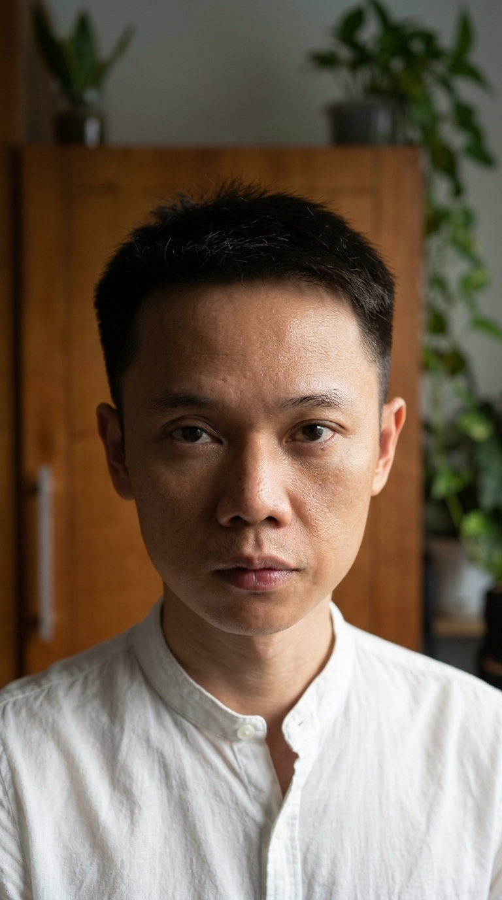
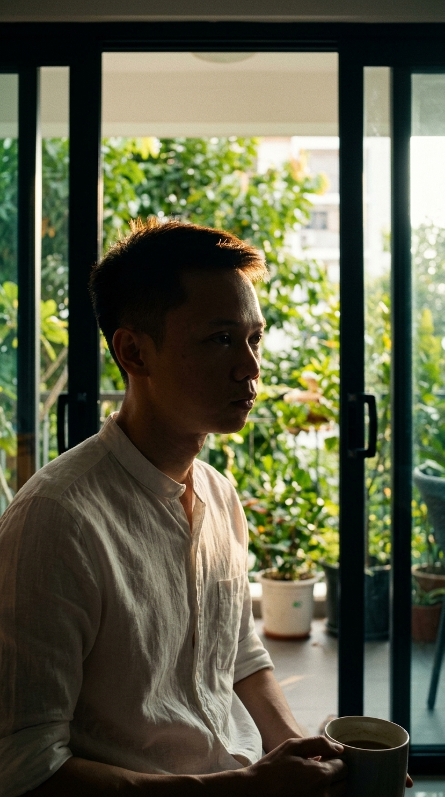

CẨM NANG QUAY B-ROLL: KỶ NGUYÊN NGỮ NGHĨA & TẮT TÀNG HÌNH
GIỚI THIỆU TỔNG QUAN
Tại sao cần quay lại B-Roll?
Tránh lặp thị giác, tăng cảm xúc đúng nhịp kịch bản. Việc sử dụng lại quá nhiều B-Roll cũ sẽ làm giảm sự chú ý của người xem, một B-Roll mới, đúng bối cảnh sẽ giúp truyền tải thông điệp sâu sắc hơn.
Mục tiêu của bộ tài liệu này là gì?
Cung cấp plan chi tiết, step-by-step để tự quay bằng điện thoại, hướng dẫn cặn kẽ từ góc máy, ánh sáng, đến timing diễn xuất, giúp người quay tự làm chủ hiện trường mà không cần cả ekip hùng hậu.
KỊCH BẢN 1: TẮT CHẾ ĐỘ TÀNG HÌNH
Kịch bản này nói về cái gì?
Kịch bản này nói về nỗi đau của những người làm nghề lâu năm, có chuyên môn vững nhưng lại vô hình trên môi trường số, và kêu gọi họ phải "tắt chế độ tàng hình" để hiện diện đúng giá trị.
Tại sao phải quay lại 5 câu này?
Các câu 13, 3, 1, 5, 9 là những câu cốt lõi mang cảm xúc mạnh nhất: nỗi đau "vô hình" (Câu 3), áp lực dữ liệu (Câu 1), sự bế tắc (Câu 5), uy tín đồng hành (Câu 9) và cú chốt kêu gọi hành động (Câu 13). Đây là xương sống của kịch bản, cần shot quay chất lượng cao để truyền tải hết sức nặng.
Chi tiết từng cảnh quay như thế nào?
Dưới đây là chi tiết nguyên văn shot-list được tối ưu cho kịch bản Tắt Chế Độ Tàng Hình.
🎬 SHOT-LIST QUAY LẠI — "TẮT CHẾ ĐỘ TÀNG HÌNH"
Nguyên tắc gốc: Mỗi câu thoại cần 5–7 góc khác nhau để editor có đủ chất liệu cắt nhịp 3s.
Mỗi lần quay → khai thác hết bối cảnh đó để có 2–3 biến thể dùng được cho nhiều câu/nhiều kịch bản khác nhau về sau.
Quy ước ký hiệu: [CU] = Close-up cận mặt | [MCU] = Medium Close-up từ ngực | [ECU] = Extreme Close-up cực cận tay/mắt | [WS] = Wide shot góc rộng | [OTS] = Over-the-shoulder qua vai | [TOP] = Top-down từ trên xuống
⚡ TỔNG QUAN THỨ TỰ QUAY (Theo mức độ ưu tiên)
| # | Câu | Bối cảnh chính | Ưu tiên |
|---|---|---|---|
| 1 | Câu 13 — CTA | Bàn làm việc, nhìn thẳng ống kính | 🔥 Phải quay |
| 2 | Câu 3 — "Vô hình" | Phone hiện 0 view / màn hình trống | 🔥 Phải quay |
| 3 | Câu 1 — "Kỷ nguyên AI" | Màn hình dashboard + thao tác phân vân | 🔥 Phải quay |
| 4 | Câu 5 — "Tay nghề chết" | Ngón tay gõ thái dương, bế tắc | ⚡ Nên quay |
| 5 | Câu 9 — "Ông giáo làm được" | Nhìn thẳng + micro-action | ⚡ Nên quay |
🔥 CÂU 1 — "Kỷ Nguyên AI... Vạn Vật Kết Nối Bằng Dữ Liệu"
🎯 Cảm giác cần đạt được
Người xem phải CẢM được nhịp độ dữ liệu không ngừng nghỉ — không phải xem video về công nghệ, mà là bị cuốn vào guồng máy đó. Áp lực, tốc độ, không dừng lại được.
📐 CẢNH CHÍNH — BỐI CẢNH: BÀN LÀM VIỆC + MÀN HÌNH DASHBOARD
Setup bối cảnh: Mở sẵn 1 trong 3 màn hình này:
- A — Facebook Ads Manager (hiện số liệu, biểu đồ reach)
- B — Google Analytics / GA4 (traffic overview)
- C — Tab nhiều cửa sổ cùng lúc (Email + Sheet + Facebook)
CẢNH 1.1[ECU] Macro tay gõ phím — nhịp nhanh
CẢNH 1.2[TOP] Bird's-eye nhìn từ trên xuống — góc rộng
CẢNH 1.3[OTS] Qua vai — nhìn vào màn hình
CẢNH 1.4[MCU] Mặt + tay — thao tác và suy nghĩ
CẢNH 1.5[CU] Cận mặt — nhìn màn hình, ánh mắt chuyển động
🔄 BIẾN THỂ KHAI THÁC CÙNG LÚC (Cùng bối cảnh, dùng cho kịch bản khác)
Biến thể A — "Làm việc khuya": Tắt đèn phòng, chỉ ánh sáng màn hình chiếu lên mặt. Quay cảnh 1.3 + 1.4 trong điều kiện ánh sáng này → dùng được cho kịch bản nói về sự hy sinh, thức khuya học
Biến thể B — "Nhận kết quả": Khi màn hình hiện biểu đồ tăng hoặc notification → dừng tay → nụ cười khẽ → dùng cho CTA hoặc kịch bản chứng minh kết quả
Biến thể C — "Quá tải thông tin": Nhiều tab mở cùng lúc, tay lướt nhanh qua nhiều màn hình, thở dài → dùng cho kịch bản nói về burnout hoặc học nhiều quá
🔥 CÂU 3 — "AI Coi Như Bạn Vô Hình — Hệ Thống Không Trả Cho Bạn Khách Hàng Nào"
🎯 Cảm giác cần đạt được
Cần tạo ra khoảnh khắc đau lặng — không phải drama, mà là sự thật hiển nhiên đến thẫn thờ. Người xem phải nhìn thấy hình ảnh và tự liên kết với chính mình.
📐 CẢNH CHÍNH — BỐI CẢNH: PHONE + MÀN HÌNH MẠNG XÃ HỘI
Setup bối cảnh: Phone hoặc laptop đang mở Facebook cá nhân / trang / TikTok analytics
CẢNH 3.1[ECU] Cực cận màn hình phone — con số 0
CẢNH 3.2[MCU] Tay cầm phone + phản ứng mặt
CẢNH 3.3[WS] Góc rộng — người ngồi, phone trên tay, không gian trống
CẢNH 3.4[TOP] Bird's-eye — bàn tay + phone + bàn trống
CẢNH 3.5[CU] Cận ngón tay — hành động gõ/xóa caption
🔄 BIẾN THỂ KHAI THÁC CÙNG LÚC
Biến thể A — "Đăng bài xong chờ": Cảnh vừa đăng bài → đặt phone xuống → nhìn ra xa → nhìn lại phone → vẫn 0 → dùng cho kịch bản nói về sự kiên nhẫn và nhất quán
Biến thể B — "So sánh": Mở phone xem trang người khác (nhiều view) → nhìn lại trang của mình (ít view) → thở dài → dùng cho kịch bản so sánh trước/sau
🔥 CÂU 13 — "Tắt Chế Độ Tàng Hình Và Đăng Ký Ở Link Bên Dưới"
🎯 Cảm giác cần đạt được
CTA — cần năng lượng dứt khoát, tin tưởng, ấm áp. Không van xin, không năn nỉ. Người xem nhìn vào mắt và tự thấy muốn click.
📐 CẢNH CHÍNH — BỐI CẢNH: BÀN LÀM VIỆC, TALKING HEAD TRỰC DIỆN
Setup: Đặt máy ngang tầm mắt, ánh sáng đầy đủ, nền gọn gàng.
CẢNH 13.1[MCU] Nhìn thẳng ống kính — câu CTA chính
CẢNH 13.2[CU] Cận mặt — biểu cảm chân thành
CẢNH 13.3[ECU] Cận tay bấm nút — hành động dứt khoát
CẢNH 13.4[MCU] Nhìn thẳng — biến thể không nói
🔄 BIẾN THỂ KHAI THÁC CÙNG LÚC
Biến thể A — Hook cho video khác: Quay thêm cảnh đứng dậy khỏi bàn → quay ra nhìn thẳng camera → dùng cho hook mở đầu của video sau
Biến thể B — Reaction ngắn: Quay thêm 2–3 biểu cảm: gật đầu mạnh, tay vỗ lên đùi, cười to hơn → dùng cắt xen cho video có năng lượng cao hơn
⚡ CÂU 5 — "Tay Nghề Giấu Trong Đầu Là Tay Nghề Chết"
🎯 Cảm giác cần đạt được
Cảnh trám phải đặc tả đúng hành động vật lý của câu thoại: "giấu trong đầu". Không cần ẩn dụ phức tạp — cần cảnh thể hiện đầu óc đang bế tắc, không thoát ra được.
📐 CẢNH CHÍNH — BỐI CẢNH: BÀN LÀM VIỆC / GHẾ THƯ GIÃN
CẢNH 5.1[CU] Cận mặt — ngón tay gõ lên thái dương
CẢNH 5.2[MCU] Người ngồi — bế tắc
CẢNH 5.3[ECU] Cực cận mắt — nhìn vào khoảng không
CẢNH 5.4[WS] Người ngồi, tay không làm gì — khoảng trống lớn
🔄 BIẾN THỂ KHAI THÁC CÙNG LÚC
Biến thể A — "Phá vỡ": Sau chuỗi cảnh bế tắc, quay thêm cảnh: mở máy tính lên → bắt đầu gõ mạnh → mặt tập trung → dùng cho kịch bản chuyển đổi tích cực
Biến thể B — Nói chuyện một mình: Quay cảnh nhìn thẳng camera rồi lắc đầu + nụ cười tự trào → dùng cho kịch bản hài hước về sai lầm cũ
⚡ CÂU 9 — "Ông Giáo Như Mình Làm Được, Anh Chị Kinh Doanh Chắc Chắn Làm Được"
🎯 Cảm giác cần đạt được
Câu này là đỉnh cảm xúc của toàn bộ video — chuyển từ thách thức sang kết nối. Cần năng lượng đồng hành, không phải thuyết phục. Giọng điệu: "Mình đã đi qua, mình biết anh/chị làm được."
📐 CẢNH CHÍNH — BỐI CẢNH: BÀN LÀM VIỆC, TALKING HEAD
CẢNH 9.1[MCU] Nhìn thẳng — micro-action mạnh
"...thì anh chị chắc chắn làm được." 6. Gật đầu một cái chậm — khẳng định
CẢNH 9.2[CU] Cận mặt — ánh mắt tin tưởng
CẢNH 9.3[OTS] Qua vai — nhìn về phía trước
CẢNH 9.4[WS] Góc rộng bàn làm việc — context chuyên môn
🔄 BIẾN THỂ KHAI THÁC CÙNG LÚC
Biến thể A — Lớp học: Nếu có cơ hội quay tại lớp, quay thêm cảnh nhìn ra lớp học (học viên đang làm việc) → bằng chứng sống cho "ông giáo như mình"
Biến thể B — Nhìn vào ghi chú / sổ tay: Tay cầm sổ tay → nhìn lên camera → gật đầu → dùng cho kịch bản về phương pháp, quy trình
📋 CHECKLIST TRƯỚC KHI BẤM MÁY
Thiết bị
- [ ] Điện thoại pin đầy, dung lượng trống đủ
- [ ] Chân máy + gimbal (nếu có)
- [ ] Microphone cài áo (để thu âm phụ nếu cần)
- [ ] Đèn fill light (nếu quay buổi tối)
Màn hình cần chuẩn bị sẵn
- [ ] Facebook Ads Manager mở sẵn (với số liệu thật)
- [ ] Phone: vào Facebook cá nhân → một bài đăng ít view → màn hình hiện rõ
- [ ] Nhiều tab trình duyệt mở sẵn (tạo cảm giác bận rộn)
Thứ tự quay tối ưu (tiết kiệm thời gian)
- Quay nhóm "Bàn làm việc + Màn hình": Câu 1 (5 cảnh) + Biến thể A/B/C → ~30 phút
- Quay nhóm "Phone + Vô hình": Câu 3 (5 cảnh) + Biến thể → ~20 phút
- Quay nhóm "Talking head CTA": Câu 13 (4 cảnh) + Câu 9 (4 cảnh) → ~25 phút
- Quay nhóm "Bế tắc nội tâm": Câu 5 (4 cảnh) + Biến thể → ~15 phút
Tổng thời gian ước tính: ~90 phút
🔗 THAM KHẢO PHONG CÁCH QUAY NHANH
| Mục đích | Link xem tham khảo |
|---|---|
| Góc bàn làm việc 7 kiểu | kortafilms — Camera Angles Mastery |
| Đặt máy một mình — không ekip | turapinaanastasiia — Film Alone Cafe |
| Talking head kết thúc nhìn thẳng mắt | neolumo — Spa Y Khoa |
| Quy trình làm việc có lớp lang | shogentle — How to Cook a Video |
| 3 thói quen nhỏ — nhịp cắt kỷ luật | joshdiazfilms — Life Feel Put Together |
| Biểu cảm phân tích sai lầm | 5 Visual Hooks |
| Cận tay bấm phone dứt khoát | Phone Cam StartRecord |
File tổng hợp bởi Antigravity • Kịch bản: "Tắt Chế Độ Tàng Hình" • Sep 2026
KỊCH BẢN 2: KỶ NGUYÊN NGỮ NGHĨA
Kịch bản này tập trung vào điều gì?
Kịch bản 2 tập trung vào việc mạng xã hội đã thay đổi thuật toán, không còn đếm lượt tương tác hời hợt, mà tập trung vào "ngữ nghĩa" - máy sẽ nghe và hiểu bạn đang giải quyết vấn đề gì để đẩy video đến đúng người cần. Bản chất là đóng gói tay nghề thật.
Những cảnh quay hài hước (câu 6, 7) cần xử lý timing ra sao?
Hài hước ở đây là hài deadpan và hài insight (sự thật nhạy cảm). Không diễn hài. Timing quyết định tất cả: Dừng - Punchline - Beat im lặng - Cười nhẹ. Cười nhẹ là yếu tố đắt giá nhất, một "knowing smile" chứ không phải cười to bỡn cợt.
Chi tiết toàn bộ shot-list?
Nguyên văn shot-list của kịch bản Kỷ Nguyên Ngữ Nghĩa:
🎬 SHOT-LIST — "KỶ NGUYÊN NGỮ NGHĨA"
Nguyên tắc gốc: Mỗi câu thoại cần 4–5 góc khác nhau để editor có đủ chất liệu cắt nhịp 3s.
Mỗi lần quay → khai thác hết bối cảnh đó để có 2–3 biến thể dùng được cho nhiều câu/nhiều kịch bản khác nhau về sau.
Quy ước ký hiệu: [CU] = Close-up cận mặt | [MCU] = Medium Close-up từ ngực | [ECU] = Extreme Close-up cực cận tay/mắt | [MS] = Medium Shot từ eo | [WS] = Wide shot góc rộng | [OTS] = Over-the-shoulder qua vai | [TOP] = Top-down từ trên xuống | [PRF] = Profile nghiêng 90°
⚡ TỔNG QUAN THỨ TỰ QUAY (Theo mức độ ưu tiên)
| # | Câu | Bối cảnh chính | Ưu tiên |
|---|---|---|---|
| 1 | Câu 14 — CTA Chỉ Tay | Bàn làm việc, nhìn thẳng ống kính | 🔥 Phải quay |
| 2 | Câu 6 — "Đêm Mỏi Gáy" | Sofa/giường — điện thoại ánh sáng tối | 🔥 Phải quay |
| 3 | Câu 7 — "Hiểu Hơn Vợ" | Nhìn thẳng — timing hài hước | 🔥 Phải quay |
| 4 | Câu 3 — "Mạng Xã Hội Cũ Đã Chết" | Bàn làm việc, phone/laptop | 🔥 Phải quay |
| 5 | Câu 1 — "Đếm Lượt Like Đã Qua Lâu Rồi" | Màn hình analytics, biểu cảm phân vân | ⚡ Nên quay |
| 6 | Câu 2 — "Bằng Chứng 40.000 Followers" | Màn hình page, biểu cảm tự hào nhẹ | ⚡ Nên quay |
| 7 | Câu 5 — "Máy Nghe Bạn Tháo Gỡ Việc Gì" | Màn hình phone hiện đề xuất | ⚡ Nên quay |
| 8 | Câu 9 — "Lọt Vòng Gửi Xe" | Setup quay video — bàn, đèn, máy | ⚡ Nên quay |
🔥 CÂU 1 — "Làm Video Hiệu Quả Ấy Là Mình Phải Đếm Lượt Like. Cái Cách Làm Đó Nó Đã Qua Lâu Rồi."
🎯 Cảm giác cần đạt được
Người xem phải ngay lập tức nhận ra mình đang làm điều đã lỗi thời — không phải sự phán xét, mà là sự thật đơn giản không thể phủ nhận. Giọng điệu: người bạn cũ đang nhẹ nhàng nói với mình "ê, cái đó xưa rồi."
📐 CẢNH CHÍNH — BỐI CẢNH: TALKING HEAD + ÁNH MẮT THẲNG THẮN
Setup bối cảnh: Ngồi tại bàn làm việc. Ánh sáng bình thường. Không cần mở màn hình gì — câu này nói thẳng với người xem.
CẢNH 1.1[MCU] Nhìn thẳng — phát ngôn đơn giản, không phô trương
CẢNH 1.2[CU] Cận mặt — nhíu mày khi nói "đếm lượt like"
CẢNH 1.3[ECU] Cực cận màn hình analytics — con số like thấp/nhiều không quan trọng
CẢNH 1.4[PRF] Profile — biểu cảm trầm tư, nhớ lại
🔄 BIẾN THỂ KHAI THÁC CÙNG LÚC
Biến thể A — "Đã từng làm vậy": Quay thêm cảnh tay lướt cuộn mạnh qua trang cá nhân → dừng ở bài đăng cũ → mặt biểu cảm nostalgia → dùng cho kịch bản flashback "ngày trước mình thế này"
Biến thể B — "Nhìn thẳng không che đậy": Sau khi nói câu thoại chính, giữ nguyên góc MCU, hít thở bình thường 3–4 giây không nói gì → dùng làm silent beat giữa các câu thoại nặng
⚡ CÂU 2 — "Mỗi Tuần Đăng Đúng Một Video... Page Vẫn Kéo Được 40.000 Lượt Theo Dõi"
🎯 Cảm giác cần đạt được
Đây là bằng chứng sống — không phải khoe, mà là "mình nói có số liệu". Biểu cảm phải là sự tự hào lặng lẽ, không phô trương. Cần cảnh minh họa con số thật.
📐 CẢNH CHÍNH — BỐI CẢNH: MÀN HÌNH PAGE + TALKING HEAD
Setup bối cảnh: Mở trang Facebook/TikTok của mình, thấy con số follower thật. Quay cùng lúc màn hình + phản ứng mặt.
CẢNH 2.1[ECU] Cực cận màn hình — con số 40.000
CẢNH 2.2[MCU] Mặt + tay cầm phone — phản ứng tự hào lặng lẽ
CẢNH 2.3[OTS] Qua vai — nhìn vào màn hình page
CẢNH 2.4[CU] Cận mặt — nói "mỗi tuần chỉ đăng đúng một video"
🔄 BIẾN THỂ KHAI THÁC CÙNG LÚC
Biến thể A — "Lịch đăng bài": Mở calendar app, thấy lịch đăng bài mỗi tuần đúng 1 ngày → dùng cho kịch bản về kỷ luật, consistency
Biến thể B — "Phản ứng người khác": Quay cảnh notification mới hiện lên trên phone (tin nhắn, comment) → nụ cười → đặt phone xuống → dùng cho kịch bản về kết quả tự nhiên
🔥 CÂU 3 — "Cái Mạng Xã Hội Cũ Mà Mình Từng Biết Nó Đã Chết Rồi. Bây Giờ Nó Là Kỷ Nguyên Của Ngữ Nghĩa."
🎯 Cảm giác cần đạt được
Đây là tuyên ngôn trung tâm của toàn bộ video. Câu thoại phải được nói với sự tin tưởng tuyệt đối — không phải kêu gọi, mà là tuyên bố thực tế. Giống như ai đó vừa nhìn thấy mặt trời mọc và nói "ngày mới bắt đầu rồi".
📐 CẢNH CHÍNH — BỐI CẢNH: TALKING HEAD TRỰC DIỆN + CẢNH MINH HỌA "CHẾT"
Setup bối cảnh: Bàn làm việc. Ánh sáng đủ. Có thể có phone hoặc laptop trên bàn.
CẢNH 3.1[MCU] Nhìn thẳng — tuyên ngôn
CẢNH 3.2[ECU] Cực cận tay — "chôn" cái phone/tắt màn hình cũ
CẢNH 3.3[WS] Góc rộng — người ngồi giữa không gian, ánh sáng từ cửa sổ
CẢNH 3.4[CU] Cận mặt — nụ cười khi nói "kỷ nguyên của ngữ nghĩa"
CẢNH 3.5[PRF] Profile + ánh sáng cửa sổ
🔄 BIẾN THỂ KHAI THÁC CÙNG LÚC
Biến thể A — "Trước và Sau": Quay thêm: mở tab mạng xã hội cũ (2020 style, nhiều quảng cáo) → thở dài nhẹ → đóng tab → mở tab mới (analytics nghĩa vụ) → nụ cười → dùng cho kịch bản so sánh cũ/mới
Biến thể B — "Viết tay": Viết chữ "Semantic Era" hoặc "Kỷ nguyên ngữ nghĩa" lên giấy → gạch dưới → dùng cho B-Roll xen kẽ câu 3
⚡ CÂU 4 — "Bạn Không Cần Thiết Phải Làm Idol Trên Video, Bởi Vì AI Nó Không Đếm Tương Tác Nữa."
🎯 Cảm giác cần đạt được
Câu giải phóng. Người xem đang giữ nỗi sợ "mình không đẹp, không diễn được". Câu này tháo gỡ nỗi sợ đó. Biểu cảm phải là sự nhẹ nhõm đang được trao đi — không phải hứa hẹn, mà là sự thật làm người ta thở phào.
📐 CẢNH CHÍNH — BỐI CẢNH: TALKING HEAD — BIỂU CẢM THOẢI MÁI
CẢNH 4.1[MCU] Nhìn thẳng — giọng thả lỏng
CẢNH 4.2[CU] Cận mặt — nụ cười khi nói "không cần làm idol"
CẢNH 4.3[ECU] Cực cận tay — gesture "vẫy nhẹ"
🔄 BIẾN THỂ KHAI THÁC CÙNG LÚC
Biến thể A — "Không makeup, không filter": Quay cảnh ngồi bình thường không chuẩn bị gì đặc biệt → nhìn thẳng camera → nụ cười tự nhiên → dùng cho kịch bản về authenticity
🔥 CÂU 5 — "Giờ Nó Nghe Xem Bạn Đang Tháo Gỡ Việc Gì. Khách Than Chuyện Kho Bãi, Nó Tự Đẩy Video Bạn Gỡ Rối Vào Thẳng Màn Hình."
🎯 Cảm giác cần đạt được
Câu này cần minh họa cụ thể. Người xem cần THẤY (không chỉ nghe) cơ chế: ai đó than khổ → AI hiểu → đẩy đúng video vào. Cần cảnh B-Roll vật lý hoá ví dụ về kho bãi/màn hình đẩy video.
📐 CẢNH CHÍNH — BỐI CẢNH: PHONE + MÀN HÌNH FEED + TALKING HEAD
CẢNH 5.1[ECU] Cực cận màn hình phone — video được đề xuất hiện lên
CẢNH 5.2[MCU] Talking head — nói câu ví dụ "Khách than chuyện kho bãi"
CẢNH 5.3[TOP] Bird's-eye — tay cầm phone, màn hình hiện feed
CẢNH 5.4[CU] Cận mặt — biểu cảm "biết điều đó từ lâu"
🔄 BIẾN THỂ KHAI THÁC CÙNG LÚC
Biến thể A — "Mở app và tìm kiếm": Quay cảnh gõ search bar với từ khoá chuyên ngành → kết quả hiện ra → dùng cho kịch bản về SEO semantic/tìm kiếm
Biến thể B — "Nhận xét của AI": Nếu có, quay màn hình ChatGPT/AI tool đang phân tích nội dung → dùng cho kịch bản về công cụ AI
🔥🔥 CÂU 6 — "Đêm Mỏi Gáy Lướt Chậm 3 Giây... Sáng Mở Máy Đã Thấy Ngay Clip Massage Hiện Lên."
🎯 Cảm giác cần đạt được
Câu hài hước + đời thường cao nhất trong kịch bản. Tính hài nằm ở sự CHÍNH XÁC đến đáng sợ của AI. Người xem phải cảm thấy "ủa, mình cũng bị như vậy" và cười khẽ vì bị bắt quả tang. Không cần diễn hài — chỉ cần TÁI HIỆN ĐÚNG cảnh đó là đã đủ hài.
🎭 PHÂN TÍCH TIMING HÀI (QUAN TRỌNG)
Cấu trúc hài của câu này: Setup ("đêm mỏi gáy lướt chậm 3 giây") → Beat im lặng → Punchline ("sáng mở máy đã thấy ngay clip massage")
Điểm hài đến từ: Khoảng cách thời gian "đêm → sáng" và sự chính xác "lướt chậm 3 giây → clip massage" — AI biết trong khi chủ thể chưa kịp nhận ra mình đau
Cách không giết chết câu hài: Không cười trước punchline. Nói "sáng mở máy đã thấy ngay" bằng giọng thực tế, sau đó mới để nụ cười thoáng qua
📐 CẢNH CHÍNH — BỐI CẢNH: 2 THỜI ĐIỂM CẦN QUAY RIÊNG
THỜI ĐIỂM 1: "Đêm mỏi gáy lướt chậm" — bối cảnh tối
Setup: Phòng tối (tắt đèn hoặc đèn rất yếu). Chỉ ánh sáng màn hình phone chiếu lên mặt. Ngồi hoặc nằm trên sofa/giường. Tư thế: cổ cúi xuống nhìn phone theo kiểu người đã ngồi lâu.
CẢNH 6.1[CU] Cận mặt — ánh sáng phone chiếu từ dưới lên, tư thế mỏi gáy
CẢNH 6.2[ECU] Cực cận ngón cái lướt phone — chậm rãi
CẢNH 6.3[WS] Góc rộng — người ngồi lướt phone trong phòng tối
THỜI ĐIỂM 2: "Sáng mở máy thấy clip massage" — bối cảnh sáng
Setup: Buổi sáng, ánh sáng bình thường hoặc sáng hơn hẳn so với cảnh đêm. Tạo contrast rõ rệt với cảnh 6.1–6.3.
CẢNH 6.4[ECU] Cực cận màn hình — feed hiện clip massage/video về cổ vai gáy
CẢNH 6.5[CU] Cận mặt buổi sáng — phản ứng "ủa sao nó biết?"
🔄 BIẾN THỂ KHAI THÁC CÙNG LÚC
Biến thể A — "Lướt phone khuya + đặt xuống": Sau cảnh lướt chậm → đặt phone xuống → tắt màn hình → nằm xuống (thấy silhouette WS) → dùng cho kịch bản về sức khoẻ số, giải pháp detox phone
Biến thể B — "Morning routine": Ngay sau khi thức dậy → cầm phone → mở khóa → nhìn notification — một chuỗi thói quen buổi sáng → dùng cho kịch bản về habits, morning routine
Biến thể C — "Bị bắt quả tang": Quay thêm góc MCU khi nhìn màn hình + nụ cười lớn hơn (laugh nhẹ) → dùng cho video có năng lượng vui vẻ hơn hoặc câu mở đầu hook
🔥🔥 CÂU 7 — "Nhiều Khi Nó Hiểu Bạn Hơn Vợ Bạn. [Cười Nhẹ]"
🎯 Cảm giác cần đạt được
Câu hài hước + insight sâu nhất trong kịch bản. Tính hài đến từ sự đúng đến mức... không thoải mái. Cười xong thì thấy hơi buồn một chút. Đây là loại hài của người thông minh — punchline nằm ở sự thật không ai muốn thừa nhận.
🎭 PHÂN TÍCH TIMING HÀI (PHỨC TẠP HƠN CÂU 6)
Cấu trúc hài của câu này: Câu setup nhẹ nhàng → "Nhiều khi nó hiểu bạn hơn..." → Dừng (người xem đang chờ AI, hệ thống, thuật toán) → "Vợ bạn" → Beat im lặng → [Cười nhẹ]
Điểm hài đến từ: Sự bất ngờ của "vợ bạn" thay vì "bạn bè/đồng nghiệp" — escalation đột ngột vào lãnh thổ cá nhân nhạy cảm
[Cười nhẹ] là element quan trọng nhất: KHÔNG PHẢI cười vì câu đó buồn cười. Là cười vì BIẾT câu đó đúng và hơi ngượng vì biết. Đây là "knowing smile" — nụ cười của người chia sẻ điều nhạy cảm
📐 CẢNH CHÍNH — BỐI CẢNH: TALKING HEAD — BIỂU CẢM TINH TẾ NHẤT
⚠️ Câu này chỉ cần 1 góc quay chính làm đúng — đừng phân tán. Editor sẽ dùng nguyên take này không cần B-Roll xen vào.
CẢNH 7.1[CU] Cận mặt — timing hài chính xác(Cảnh quan trọng nhất)
CẢNH 7.2[MCU] Góc rộng hơn — dùng làm biến thể nếu CU không ổn
CẢNH 7.3[MCU] Biến thể năng lượng cao hơn — cười rộng hơn
📌 GHI CHÚ QUAN TRỌNG CHO NGƯỜI QUAY:

AI Storyboard: Câu 7 Hài Deadpan (Rembrandt light, flat face)
Câu 7 cần quay ít nhất 5–7 lần để bắt đúng timing. Timing hài như cái cân: sớm 0.1 giây = không buồn cười. Trễ 0.1 giây = gượng gạo. Chỉ cần 1 take đúng là đủ. Không cần phải hoàn hảo ngay từ đầu.
🔄 BIẾN THỂ KHAI THÁC CÙNG LÚC
Biến thể A — "Hook riêng": Quay riêng chỉ câu "Nhiều khi nó hiểu bạn hơn vợ bạn" + cười nhẹ → dùng làm hook mở đầu cho video khác (đây là loại câu hook mạnh — kéo người dừng xem)
Biến thể B — "Phản ứng sau đó": Quay tiếp sau khi cười → giơ tay lên ("ừ thôi kệ") → dùng xen vào câu 8 khi cần bridge cảm xúc từ hài sang nghiêm túc
⚡ CÂU 8 — "Nên Làm Video Bây Giờ, Bản Chất Là Đóng Gói Tay Nghề Thật Bán Ra Thị Trường. Nhưng Có Một Chỗ Vướng."
🎯 Cảm giác cần đạt được
Đây là câu chuyển pivot — từ vùng hài hước (câu 6–7) quay về nghiêm túc. Và câu cuối "nhưng có một chỗ vướng" là open loop câu kéo người xem sang câu 9. Biểu cảm phải thể hiện sự chuyển gear rõ ràng.
📐 CẢNH CHÍNH
CẢNH 8.1[MCU] Nhìn thẳng — pivot từ hài sang nghiêm túc
CẢNH 8.2[CU] Cận mặt — biểu cảm nhíu mày khi nói "vướng"
🔄 BIẾN THỂ KHAI THÁC CÙNG LÚC
Biến thể A — "Đóng gói tay nghề": Quay cảnh viết tay trên giấy từ "tay nghề" → vẽ mũi tên → "video" → dùng cho B-Roll minh họa concept đóng gói
🔥 CÂU 9 — "Máy Chỉ Đọc Được Chất Xám Nếu Video Của Bạn Lọt Qua Được Vòng Gửi Xe..."
🎯 Cảm giác cần đạt được
Câu này là cổng lọc kỹ thuật — có tay nghề mà video kém chất lượng thì AI không đọc được. Người xem phải cảm thấy "ừ, điều này đúng và mình chưa làm đủ". Cần cảnh B-Roll thể hiện các yếu tố: hình ảnh, âm thanh, định dạng, nhịp điệu.
📐 CẢNH CHÍNH — BỐI CẢNH: SETUP QUAY VIDEO
Setup bối cảnh: Bàn quay video — điện thoại trên chân máy, đèn fill, micro. Thể hiện bằng chứng của "setup bài bản".
CẢNH 9.1[ECU] Cực cận — chạm vào micro, kiểm tra kết nối
CẢNH 9.2[MCU] Talking head — nói câu "vòng gửi xe"
CẢNH 9.3[WS] Góc rộng — toàn bộ setup quay video
CẢNH 9.4[TOP] Bird's-eye — bàn setup nhìn từ trên
🔄 BIẾN THỂ KHAI THÁC CÙNG LÚC
Biến thể A — "Kiểm tra ánh sáng": Tay điều chỉnh đèn fill → nhìn vào camera → điều chỉnh lại → dùng cho kịch bản về setup quay video
Biến thể B — "Trước và sau": Quay góc rộng bàn lộn xộn (trước) → bàn gọn gàng (sau) → dùng cho kịch bản về quy trình, chuẩn bị
⚡ CÂU 10 — "Cách Để Qua Được Vòng Này Thực Chất Nằm Ở Một Quy Trình Làm Tại Bàn Bài Bản. Thiết Bị Tối Giản, Set Up Cố Định Một Chỗ."
🎯 Cảm giác cần đạt được
Câu giải pháp — đơn giản hóa thứ người ta tưởng phức tạp. Biểu cảm: "không phức tạp đâu, đây là quy trình thôi".
📐 CẢNH CHÍNH
CẢNH 10.1[MCU] Nhìn thẳng — câu giải pháp đơn giản
CẢNH 10.2[ECU] Cận setup — "thiết bị tối giản"
CẢNH 10.3[TOP] Bird's-eye — bàn setup hoàn chỉnh nhìn từ trên
🔄 BIẾN THỂ KHAI THÁC CÙNG LÚC
Biến thể A — "So sánh setup": Bên trái frame: bàn lộn xộn + nhiều thiết bị → bên phải frame: chỉ phone + micro (split screen hoặc 2 cảnh riêng) → dùng cho kịch bản tối giản hoá thiết bị
⚡ CÂU 11 — "Góc Máy Sạch Sẽ, Nhịp Điệu Cắt Dựng Dứt Khoát. Kịch Bản Gạch Đầu Dòng Ngắn Gọn."
🎯 Cảm giác cần đạt được
Câu checklist — 3 yếu tố cụ thể. Cần cảnh minh họa từng yếu tố. Editor có thể sync từng yếu tố với từng cảnh B-Roll tương ứng.
📐 CẢNH CHÍNH — BỐI CẢNH: MINH HỌA TỪNG YẾU TỐ
CẢNH 11.1[MCU] Talking head — nói câu 11 với gesture liệt kê
CẢNH 11.2[ECU] Cận tay viết gạch đầu dòng trên giấy
CẢNH 11.3[WS] Góc rộng — người ngồi trước setup quay sạch sẽ
🔄 BIẾN THỂ KHAI THÁC CÙNG LÚC
Biến thể A — "Xem lại bản ghi chú": Tay cầm sổ → đọc gạch đầu dòng → gật đầu → đặt sổ xuống → bắt đầu quay → dùng cho kịch bản về chuẩn bị trước khi quay
⚡ CÂU 12 — "Quan Trọng Nhất Là Tạo Ra Sự Thoải Mái Để Bạn Ngồi Xuống Là Nói Chuyện Tự Nhiên Như Đang Tiếp Khách Ở Nhà."
🎯 Cảm giác cần đạt được
Đây là câu về năng lượng — không phải kỹ thuật. Cảnh phải toát ra sự thoải mái thật sự. Nếu người quay đang căng thẳng, cảnh này sẽ phản tác dụng. Đây là câu cần quay SAU CÙNG khi người quay đã warm up hoàn toàn.
📐 CẢNH CHÍNH
CẢNH 12.1[MCU] Talking head — ngồi thoải mái, không cứng nhắc
CẢNH 12.2[WS] Góc rộng — người ngồi thoải mái trong không gian quen thuộc
🔄 BIẾN THỂ KHAI THÁC CÙNG LÚC
Biến thể A — "Tiếp khách thật": Nếu có người khác trong khung cảnh (nhẹ thôi, không trở thành "câu chuyện 2 người") → dùng cho kịch bản về tư vấn, nói chuyện thật với khách
⚡ CÂU 13 — "Cuối Tháng 10 Này Tại Lớp Offline, Mình Sẽ Mang Toàn Bộ Quy Trình Đó Ra Chỉ Cho Bạn."
🎯 Cảm giác cần đạt được
Câu bridge dẫn vào CTA — cần năng lượng cam kết. Không phải hứa hẹn, mà là lịch cụ thể. Giọng: "Mình đã chuẩn bị sẵn rồi, chỉ cần bạn đến."
📐 CẢNH CHÍNH
CẢNH 13.1[MCU] Nhìn thẳng — cam kết cụ thể
CẢNH 13.2[CU] Cận mặt — biểu cảm cam kết
CẢNH 13.3[ECU] Cực cận tay — vỗ nhẹ lên bàn
🔥 CÂU 14 — CTA — "Đảm Bảo Học Xong Là Ra Việc. Không Bao Giờ Để Bạn Ra Về Tay Không. [Chỉ Tay] Link Đăng Ký Mình Để Ngay Bên Dưới Nhé."
🎯 Cảm giác cần đạt được
CTA cuối — cần năng lượng dứt khoát, cam kết, ấm áp. Không van xin, không năn nỉ. Ba yếu tố cần đạt: (1) Đảm bảo = lời cam kết, (2) Không để tay không = empathy với nỗi lo của người học, (3) Chỉ tay + Link = hành động cụ thể.
📐 CẢNH CHÍNH — BỐI CẢNH: BÀN LÀM VIỆC, TALKING HEAD TRỰC DIỆN
Setup: Đặt máy ngang tầm mắt, ánh sáng đầy đủ, nền gọn gàng. Ngồi thẳng, tư thế đĩnh đạc nhưng không cứng.
CẢNH 14.1[MCU] Nhìn thẳng ống kính — câu CTA chính
CẢNH 14.2[CU] Cận mặt — biểu cảm chân thành + nụ cười cuối
CẢNH 14.3[ECU] Cực cận tay — gesture chỉ xuống dứt khoát
CẢNH 14.4[MCU] Nhìn thẳng — biến thể silent CTA sau khi nói
🔄 BIẾN THỂ KHAI THÁC CÙNG LÚC
Biến thể A — Hook ngược: Quay thêm cảnh đứng dậy từ bàn → bước ra phía camera → nhìn thẳng → "bạn còn chờ gì nữa?" — dùng cho hook mở đầu video remarketing
Biến thể B — Năng lượng cao hơn: Quay thêm biến thể vỗ tay nhẹ vào nhau ("chuẩn bị thôi") → dùng cho version năng lượng cao vào dịp gần deadline lớp
Biến thể C — Đặt xuống dứt điểm: Sau khi nói xong CTA → bút đặt xuống bàn chậm và chắc → nhìn thẳng camera → dùng đóng chương cuối video
📋 CHECKLIST TRƯỚC KHI BẤM MÁY
Thiết bị
- [ ] Điện thoại pin đầy, dung lượng trống đủ (tối thiểu 10GB)
- [ ] Chân máy + điều chỉnh đúng tầm mắt
- [ ] Microphone cài áo kết nối ổn định
- [ ] Đèn fill light (nếu quay buổi tối — đặc biệt cảnh 6.1–6.3)
- [ ] Đèn tắt / ánh sáng tối cho cảnh đêm (Câu 6)
Màn hình / Props cần chuẩn bị sẵn
- [ ] Facebook/TikTok page mở sẵn — thấy rõ số followers 40K+
- [ ] Feed TikTok/Reels: tìm video về massage/cổ gáy hoặc chủ đề chuyên ngành → để sẵn ở đầu feed
- [ ] Setup quay: điện thoại trên chân máy + micro + đèn (hoặc ánh sáng tự nhiên) → gọn gàng
- [ ] Sổ tay + bút: viết sẵn gạch đầu dòng ngắn (cho cảnh 11.2)
- [ ] Phòng tối cho cảnh 6: đảm bảo có thể tắt đèn hoàn toàn, chỉ còn ánh màn hình
Thứ tự quay tối ưu (tiết kiệm thời gian)
- Nhóm "Talking head bàn làm việc": Câu 14 (CTA) + Câu 13 + Câu 3 + Câu 7 + Câu 8 → ~40 phút (quay khi năng lượng cao nhất)
- Nhóm "Màn hình + Analytics": Câu 1 (ECU analytics) + Câu 2 (màn hình followers) + Câu 5 (feed đề xuất) → ~20 phút
- Nhóm "Setup quay video": Câu 9 + Câu 10 + Câu 11 → ~20 phút
- Nhóm "Cảnh đêm + Sáng": Câu 6 (đêm tối) + Câu 6 sáng → ~20 phút (cần setup đặc biệt)
- Nhóm "Thoải mái": Câu 12 → ~10 phút (quay sau cùng khi đã warm up toàn bộ)
- Biến thể + Cảnh phụ: Câu 4 + biến thể các câu → ~15 phút
Tổng thời gian ước tính: ~125 phút (~2 giờ 5 phút)
🎭 PHÂN TÍCH SO SÁNH: CÂU 6 vs CÂU 7 — HAI LOẠI HÀI HƯỚC KHÁC NHAU
| Yếu tố | Câu 6 — "Đêm Mỏi Gáy" | Câu 7 — "Hiểu Hơn Vợ" |
|---|---|---|
| Loại hài | Hài đồng cảm — "mình cũng thế" | Hài insight — "đúng đến mức không thoải mái" |
| Cơ chế hài | Tái hiện tình huống quen thuộc | Punchline bất ngờ leo thang vào lãnh thổ nhạy cảm |
| Biểu cảm người nói | Trung tính khi nói → phản ứng nhẹ khi nhìn thấy kết quả | Deadpan hoàn toàn khi nói → cười nhẹ SAU punchline |
| Timing | 2 shot tách biệt: cảnh đêm + cảnh sáng | 1 shot liên tục — không được cắt |
| Số lần quay cần | 3–4 lần | 5–7 lần (khó bắt timing hơn) |
| Cảnh nào quan trọng nhất | 6.5 — phản ứng "ủa sao nó biết" | 7.1 — toàn bộ take liên tục |
| Sai lầm hay gặp | Cười trước khi kể (giết chết hài) | Nhấn mạnh "vợ bạn" — giết chết deadpan |
| Nếu không ổn | Biến thể C (cười rộng hơn) | Biến thể MCU (thấy gesture tay thêm) |
🔗 THAM KHẢO PHONG CÁCH QUAY
| Mục đích | Link xem tham khảo |
|---|---|
| Góc bàn làm việc 7 kiểu | kortafilms — Camera Angles Mastery |
| Đặt máy một mình — không ekip | turapinaanastasiia — Film Alone Cafe |
| Talking head kết thúc nhìn thẳng mắt | neolumo — Spa Y Khoa |
| Profile chiều sâu nhân vật | Artisans of Venice |
| Khoảnh khắc "bật công tắc" | Đặc Tả Ánh Mắt Mở Ra |
| Cận tay hành động dứt khoát | Cận tay bấm phone |
| Nhịp thở cảnh tĩnh | ASMR Trà Chiều & Cozy Homebody |
| Cảnh hài đời thường — timing tự nhiên | 5 Visual Hooks |
File tổng hợp bởi Antigravity B-Roll Analyst • Kịch bản: "Kỷ Nguyên Ngữ Nghĩa" • Sep 2026
KỸ THUẬT QUAY: 5 CẢNH VẠN NĂNG
Cảnh vạn năng là gì và tại sao cần thiết?
Là 5 loại cảnh chưa có trong kho, giải quyết triệt để vấn đề lặp thị giác khi editor ghép kịch bản dài. Nó cung cấp nhịp thở (nhìn cửa sổ), chiều sâu (profile), và sự dứt khoát (đặt xuống), giúp nhịp điệu video phong phú và đậm chất điện ảnh hơn.
Cách hoán đổi các cảnh này ra sao?
Dùng bảng đối chiếu ở cuối tài liệu để thay thế các cảnh overused (như gõ phím quá nhiều) bằng cảnh viết tay, hoặc thay talking head trực diện bằng góc profile để tránh nhàm chán.
🎬 5 CẢNH VẠN NĂNG MỚI — \"TẮT CHẾ ĐỘ TÀNG HÌNH\"
Mục đích tài liệu: Bổ sung vào SHOT_LIST_QUAY_LAI.md — 5 loại cảnh chưa có trong kho, giải quyết vấn đề lặp thị giác khi editor ghép kịch bản 13 câu.
Phân tích bởi Antigravity B-Roll Analyst • Sep 2026
PHẦN A — BẢNG PHÂN TÍCH CẢNH DÙNG NHIỀU NHẤT
Sau khi đọc toàn bộ kịch bản 13 câu và đối chiếu với shot-list hiện tại.
| Loại cảnh | Xuất hiện trong câu | Tần suất | Nguy cơ lặp thị giác |
|---|---|---|---|
| Gõ phím máy tính (ECU tay) | Câu 1, 6, 11 | ⚡⚡⚡ Rất cao | 🔴 Cao — 3 câu dùng chung 1 action |
| Cầm phone nhìn màn hình (MCU/CU) | Câu 3, 10 | ⚡⚡ Cao | 🟡 Trung bình |
| Nhìn thẳng ống kính — talking head (MCU) | Câu 7, 9, 13 | ⚡⚡⚡ Rất cao | 🔴 Cao — 3 câu liên tiếp cùng góc |
| Ngồi bất động / chờ đợi (WS) | Câu 4, 5 | ⚡⚡ Cao | 🟡 Trung bình |
| Mặt cúi xuống / bế tắc (CU) | Câu 5, 4 | ⚡⚡ Cao | 🟡 Trung bình |
| OTS nhìn màn hình | Câu 1, 11 | ⚡ Trung bình | 🟢 Thấp |
| Bird's-eye (TOP) | Câu 1, 3 | ⚡ Trung bình | 🟢 Thấp |
⚠️ Những gì cần giải quyết để tránh lặp thị giác
Vấn đề 1 — Gõ phím overused: Câu 1 (ECU tay gõ), Câu 6 (gõ phím), Câu 11 (gõ phím) — editor sẽ phải dùng cùng 1 loại shot 3 lần. Cần: cảnh thay thế mang năng lượng tương đương nhưng hành động khác.
Vấn đề 2 — Talking head liên tiếp: Câu 7, 8, 9 là chuỗi liên tiếp về bằng chứng + uy tín + đồng hành. Cả 3 câu đều cần talking head MCU. Không có cảnh xen vào bẻ nhịp sẽ gây hiệu ứng "bài phát biểu dài".
Vấn đề 3 — Thiếu cảnh "chuyển trạng thái": Kịch bản đi từ bi kịch (câu 2–5) sang bằng chứng (câu 7–8) sang giải pháp (câu 10–11) sang CTA (câu 13). Cần cảnh trung gian thể hiện khoảnh khắc "bật công tắc nhận thức" — hiện chưa có trong shot-list.
Vấn đề 4 — Thiếu cảnh "nhìn ngoại cảnh": Toàn bộ shot-list đóng trong bàn làm việc. Không có không gian hít thở thị giác cho người xem. Cần ít nhất 1 cảnh mở rộng không gian.
Vấn đề 5 — Thiếu cảnh "đồng hồ / thời gian": Kịch bản nói nhiều về "kỷ nguyên AI", "thời đó qua rồi", "cuối tháng 10". Không có hình ảnh ẩn dụ thời gian nào.
PHẦN B — 5 CẢNH VẠN NĂNG MỚI
CẢNH VẠN NĂNG #1 — NHÌN QUA CỬA SỔ / BAN CÔNG (Cảnh Thở)
Tại sao cần cảnh này
Toàn bộ 18 cảnh trong shot-list hiện tại đều đóng kín trong không gian bàn làm việc. Khi editor lắp ghép, người xem bị "nhốt" liên tục trong cùng một bối cảnh. Cảnh nhìn ra ngoài cửa sổ tạo ra nhịp thở thị giác — như trong phim tài liệu, đạo diễn luôn xen cảnh thiên nhiên để giải phóng áp lực nội tâm. Đây là cảnh "punctuation mark" — dấu chấm lửng thị giác.
Dùng được cho câu nào - Câu 2: "Làm nghề lâu năm mà không để lại dấu vết gì trên mạng" — nhìn ra bên ngoài = thế giới đang chuyển động, mình đứng yên nhìn - Câu 4: "Cứ nghĩ khách sẽ tự tìm đến" — ngồi chờ nhìn ra cửa sổ, không có ai gõ cửa - Câu 9: Sau câu chia sẻ cảm xúc cao — cảnh nghỉ ngơi nội tâm trước CTA - Câu 11: "Không tốn thời gian cho thứ râu ria" — nghĩ lại, định hướng lại
Có thể thay thế cho cảnh gì trong kho brollbank
- Thay thế cho: Negative Space - Không Gian Tĩnh Lặng (clip câu 2 — cảnh tĩnh vô nghĩa hơn)
- Thay thế cho: Khoảng Lặng Ban Chiều - Ngồi Chill Đợi Con (câu 4 — nhưng cảnh này có năng lượng nhân vật rõ hơn)
- Thay thế cho biến thể C câu 1 (nhìn ra ngoài sau khi quá tải)
Setup kỹ thuật
- Cỡ cảnh: MS → chuyển động pull back ra WS trong cùng 1 take
- Chiều cao máy: Ngang tầm mắt khi đứng (hoặc vai khi ngồi), xoay 45° hướng về phía cửa sổ
- Góc ngang: 3/4 profile — thấy 2/3 mặt + 1/3 khung cửa sổ phía xa
- Khoảng cách: 80–100cm tính từ chủ thể, để cả mặt người và cửa sổ đều trong frame
- Focal length gợi ý: 35–50mm (không dùng tele — cần thấy cả người lẫn ngoại cảnh); nếu có tele 85mm thì dùng cho biến thể ECU mắt phản chiếu ánh sáng cửa sổ
Action từng nhịp (mô tả theo giây)
- [0s–1s]: Nhân vật đang ngồi/đứng, mắt đang nhìn xuống (như vừa làm việc xong) → từ từ ngẩng đầu lên
- [1s–2.5s]: Mắt chuyển hướng nhìn ra cửa sổ. Cằm nhẹ ngước lên. Vai thả xuống — phản xạ buông thư
- [2.5s–4s]: Giữ nguyên. Mắt nhìn xa không focus vào điểm cụ thể. Miệng khép nhẹ, thở ra qua mũi — thấy lồng ngực phồng rồi xẹp
- [4s–5.5s]: Góc input: một nhịp gật đầu rất nhẹ (như vừa quyết định điều gì trong đầu). Mắt bắt đầu quay lại bàn
- [5.5s–7s]: Tay bắt đầu chuyển động — cầm bút, mở máy, hoặc chạm vào bàn phím → bắt đầu hành động mới
- Cut point tốt nhất: Khi mắt đang quay lại từ cửa sổ (frame 4–5s) — cut ngay lúc đó sang cảnh hành động tiếp theo
Biểu cảm chi tiết
- Mắt: Nhìn ra xa, không tập trung vào bất kỳ điểm cụ thể nào. Đồng tử giãn nhẹ. Không chớp nhiều (trạng thái suy nghĩ sâu). Cuối cảnh: đổi hướng nhìn trở lại gần
- Miệng: Khép. Không mím chặt — chỉ thả lỏng. Không nụ cười, không nhíu mày
- Vai/cổ: Vai thả xuống rõ rệt — đây là điểm khác biệt so với cảnh làm việc (vai thường căng). Cổ thẳng, không cúi
- Tay: Đặt thả trên đùi hoặc trên bàn phẳng, không cầm gì. Lòng bàn tay ngửa lên (ngôn ngữ cơ thể: mở lòng, không phòng thủ)
Cảm giác thị giác đạt được
Đây là cảnh DUY NHẤT trong toàn bộ shot-list có hướng nhìn hướng ngoại — tất cả các cảnh khác đều có nhân vật nhìn vào màn hình, nhìn xuống, hoặc nhìn thẳng ống kính. Cảnh này tạo ra khoảnh khắc nội tâm lộ ra ngoài qua ánh mắt — không cần lời thoại, không cần hành động — chỉ cần ánh mắt di chuyển từ trong ra ngoài rồi quay lại là đủ để kể một câu chuyện hoàn chỉnh. Khi cắt xen vào giữa 2 cảnh talking head, nó hoạt động như "bộ lọc cảm xúc" — cho người xem thở trước khi tiếp nhận thông tin mới.
Biến thể (thay đổi nhỏ dùng cho kịch bản khác)
- Biến thể A — "Quyết định": Nhìn ra cửa sổ → thở sâu → gật đầu mạnh hơn → quay vào làm việc ngay → dùng cho kịch bản về thay đổi tư duy, bước ngoặt
- Biến thể B — "Hoài niệm": Nhìn ra ngoài → ánh mắt mơ xa → nụ cười nhẹ thoáng qua → dùng cho kịch bản kể chuyện quá khứ, hành trình
- Biến thể C — ECU mắt phản chiếu: Chỉ quay cực cận mắt trong khi ánh sáng cửa sổ phản chiếu — không cần thấy cửa sổ thật — dùng cho kịch bản triết lý, chiêm nghiệm
Link tham khảo phong cách
- Zen Mind & Mountain Mist — xem cách xử lý không gian mở bao quanh chủ thể
- ASMR Trà Chiều & Cozy Homebody — nhịp thở cảnh, không cần action mạnh vẫn giữ được người xem
CẢNH VẠN NĂNG #2 — BÀN TAY VIẾT TRÊN GIẤY (Cảnh Quá Trình Tư Duy)
Tại sao cần cảnh này
Kịch bản có câu 11: "quy trình bài bản, dứt khoát" và câu 6: "đóng góp dữ liệu đúng cách". Trong kho brollbank hiện tại có clip Viết Sổ Ghi Chép Ý Tưởng (câu 11) — nhưng clip đó là cảnh rộng, không có biểu cảm nhân vật đi kèm. Cảnh này đề xuất kết hợp ECU bàn tay viết + phản ứng mặt (MCU) trong cùng một setup — tạo ra sự kết nối tư duy ↔ hành động mà các cảnh gõ phím không có được. Viết tay = chủ thể KIM LOẠI HOÁ kiến thức, khác hoàn toàn với gõ phím là nhập dữ liệu cơ học.
Dùng được cho câu nào - Câu 6: "Đóng góp dữ liệu bằng cách nào" — viết nháp nội dung trước khi đăng - Câu 11: "Quy trình làm tại bàn bài bản" — viết checklist / quy trình ra giấy - Câu 2: "Làm nghề lâu năm" — viết tay = ẩn dụ cho kinh nghiệm tích lũy, khác với gõ phím vội vàng - Câu 7: "Mình không hào nhoáng, không diễn" — viết tay = chân thực, không digital hoá hoàn toàn
Có thể thay thế cho cảnh gì trong kho brollbank
- Thay thế: Viết Sổ Ghi Chép Ý Tưởng - Lập Kế Hoạch Chiến Lược (câu 11) — nhưng cảnh mới này thêm phản ứng mặt, mạnh hơn
- Thay thế: B-Roll: Bài tập tân thủ - gõ mãy tính khi editor cần xen kẽ để tránh lặp
Setup kỹ thuật
- Cỡ cảnh: ECU bàn tay (60% thời gian) xen kẽ CU mặt nhìn xuống sổ (40% thời gian)
- Chiều cao máy: ECU tay — máy đặt từ trên xuống 30–45°, cách bàn tay 25–35cm; CU mặt — ngang tầm cằm (thấp hơn tầm mắt 5–8cm)
- Góc ngang: Bàn tay — thẳng 90° từ trên; Mặt — 15° bên phải (thấy mặt nghiêng nhìn xuống)
- Khoảng cách: Bàn tay: 25–35cm; Mặt: 40–50cm từ ống kính
- Focal length gợi ý: 50mm macro hoặc 85mm f/1.8 — nền sổ tay blur nhẹ nhưng chữ viết vẫn đọc được một phần
Action từng nhịp (mô tả theo giây)
- [0s–0.5s]: Tay cầm bút đặt ngọn bút lên trang giấy — dừng 0.5 giây (khoảnh khắc suy nghĩ trước khi viết)
- [0.5s–2s]: Bắt đầu viết — chữ viết chậm, rõ nét, không vội. Nghe tiếng bút cọ giấy (foley quan trọng)
- [2s–3s]: Dừng bút. Tay đặt bút xuống — ngón tay gõ nhẹ một cái lên trang giấy (ra quyết định)
- [3s–4s]: CUT sang CU mặt — nhìn xuống sổ, đọc lại những gì vừa viết. Mắt di chuyển từ trái sang phải
- [4s–5s]: Gật đầu nhẹ một lần — xác nhận. Cầm bút lên tiếp
- Cut point tốt nhất: Khi ngón tay gõ nhẹ lên trang giấy (giây 2–3) — action nhỏ nhưng đủ để cut sang cảnh khác
Biểu cảm chi tiết
- Mắt: Nhìn xuống sổ với sự tập trung rõ rệt — mắt di chuyển theo từng dòng chữ. Không nhìn ra chỗ khác. Khi gật đầu: mắt khẽ nheo lại (xác nhận nội tâm)
- Miệng: Khép nhẹ. Không mím — không có sự căng thẳng. Đôi khi môi dưới hơi cắn nhẹ (dấu hiệu tập trung)
- Vai/cổ: Cổ cúi xuống 15–20° — tư thế tập trung. Vai không căng. Lưng thẳng (không khom)
- Tay: Tay thuận cầm bút với grip chặt vừa phải — không bóp mạnh. Tay kia đặt nhẹ lên cạnh trang giấy giữ sổ — thấy được cả 2 bàn tay trong ECU
Cảm giác thị giác đạt được
Gõ phím = nhập liệu cơ học, mang năng lượng cao và nhanh. Viết tay = kiến thức đang được tạo ra từ bên trong — chậm hơn, có chủ đích hơn. Khi editor đặt cảnh gõ phím và viết tay cạnh nhau, não người xem tự đọc được sự đối lập: hệ thống AI tự động hoá vs con người chủ động — và nhân vật chọn làm cả hai, không bị thay thế. Đây là visual argument mạnh hơn bất kỳ câu thoại nào có thể diễn đạt.
Biến thể (thay đổi nhỏ dùng cho kịch bản khác)
- Biến thể A — "Lên kế hoạch": Viết danh sách có đánh dấu tick ✓ từng mục → dùng cho kịch bản về quy trình, checklist
- Biến thể B — "Gạch chân": Đang đọc sách/in-out → gạch chân một câu quan trọng → dùng cho kịch bản chia sẻ kiến thức, review sách
CẢNH VẠN NĂNG #3 — KHOẢNH KHẮC "BẬT CÔNG TẮC" (Cảnh Chuyển Trạng Thái)
AI Storyboard: Cảnh Vạn Năng #3 (Bật công tắc nhận thức / Low angle)
Tại sao cần cảnh này
Đây là cảnh quan trọng nhất còn thiếu trong toàn bộ shot-list. Kịch bản có cấu trúc: Vấn đề (câu 1–5) → Bằng chứng (câu 6–9) → Giải pháp (câu 10–12) → CTA (câu 13). Chuyển biến từ vùng vấn đề sang bằng chứng là một cú "bật công tắc nhận thức" — nhưng hiện tại không có cảnh nào thể hiện khoảnh khắc này. Editor đang phải cut thẳng từ cảnh "bế tắc" sang cảnh "giảng dạy lớp học", tạo ra sự đứt đoạn cảm xúc. Cảnh này lấp đầy khoảng trống đó — và có thể dùng cho bất kỳ kịch bản nào có cấu trúc trước/sau.
Dùng được cho câu nào - Câu 5→6: Khoảnh khắc chuyển từ "tay nghề chết" sang "đây là cách đóng góp dữ liệu" - Câu 9→10: Chuyển từ "ông giáo làm được" sang "nhưng có một vấn đề" - Câu 13: Dùng làm CTA — hành động "bật công tắc" tắt chế độ tàng hình
Có thể thay thế cho cảnh gì trong kho brollbank
- Thay thế: Cảnh 5.1 (ngón tay gõ thái dương) — kết thúc chuỗi bế tắc bằng cảnh bật công tắc
- Thay thế một phần: Cảnh Trám: Phone Cam StartRecord — cảnh bấm nút nhưng có biểu cảm rõ hơn
Setup kỹ thuật
- Cỡ cảnh: Bắt đầu MCU → zoom in nhẹ tay thực hiện hành động (CU) → cut lại MCU mặt phản ứng
- Chiều cao máy: Ngang tầm mắt chính xác — không trên, không dưới. Tạo cảm giác bình đẳng, đối thoại
- Góc ngang: Trực diện 0° — nhìn thẳng. Đây là cảnh CẦN sự trực diện để tạo cảm giác quyết định
- Khoảng cách: 60–80cm tính từ chủ thể (đủ gần để thấy tay và mặt trong cùng frame MCU)
- Focal length gợi ý: 50mm — không blur nền quá nhiều, cần thấy bối cảnh bàn làm việc phía sau để người xem biết ngữ cảnh
Action từng nhịp (mô tả theo giây)
- [0s–1s]: Ngồi nhìn xuống hoặc nhìn sang. Tư thế hơi khép — cổ cúi nhẹ, vai co lại (kế thừa từ cảnh bế tắc trước đó nếu editor dùng liên tiếp)
- [1s–1.5s]: Mắt thay đổi hướng đột ngột — nhìn thẳng về phía trước. Không từ từ, mà là chuyển đổi rõ ràng
- [1.5s–2s]: Vai thả xuống + dãn ra. Hít vào một hơi ngắn qua mũi — thấy lồng ngực phồng lên
- [2s–3s]: Tay thực hiện ONE decisive action — có thể là: mở nắp máy tính, cầm bút lên, hoặc bấm một nút trên màn hình. Hành động phải DỨT KHOÁT, không do dự
- [3s–4.5s]: Mắt focus trực tiếp vào đối tượng của hành động. Biểu cảm: tập trung, không lo lắng
- [4.5s–5s]: Hành động hoàn thành. Nụ cười micro — chỉ thoáng qua, không cần nở rộng
- Cut point tốt nhất: Ngay khi tay thực hiện hành động (giây 2–3) — cut on action chuẩn điện ảnh
Biểu cảm chi tiết
- Mắt: Chuyển đổi rõ ràng từ nhìn mơ → nhìn focus. Sau khi focus: mắt không nhìn camera (nhìn vào hành động) — chỉ trong biến thể CTA mới nhìn thẳng ống kính
- Miệng: Từ hơi hé → khép lại khi tập trung. Cuối cảnh: góc miệng nhích lên 2–3mm (micro-smile) — không phải nụ cười thật, chỉ là sự thay đổi muscle tone
- Vai/cổ: Biến đổi rõ nhất — từ co lại sang mở ra. Cổ thẳng lên. Đây là yếu tố visual quan trọng nhất của cảnh này
- Tay: Từ bất động → thực hiện một hành động dứt khoát duy nhất. Không có hành động phụ. Không do dự
Cảm giác thị giác đạt được
Hầu hết B-Roll chỉ thể hiện trạng thái (đang làm, đang chờ, đang bế tắc). Cảnh này thể hiện sự chuyển đổi — khoảnh khắc thay đổi diễn ra ngay trước mắt người xem. Về mặt tâm lý học hình ảnh, não người xem được lập trình để chú ý đến sự thay đổi nhiều hơn trạng thái ổn định. Cảnh này sẽ luôn thu hút sự chú ý, dù editor đặt ở vị trí nào trong timeline. Đây là lý do Pixar thường dành 3–5 giây cho khoảnh khắc nhân vật "quyết định" — dù không có lời thoại.
Biến thể (thay đổi nhỏ dùng cho kịch bản khác)
- Biến thể A — "Tắt chế độ tàng hình": Hành động cụ thể là nhấc đầu nhìn thẳng vào camera + gật đầu → dùng đúng cho câu 13 CTA
- Biến thể B — "Mở máy tính": Tay mở nắp laptop → màn hình sáng → mặt được ánh sáng màn hình chiếu vào → dùng cho kịch bản bắt đầu hành trình
- Biến thể C — "Đứng dậy": Đang ngồi → tay chống bàn → đứng dậy → WS thấy cả người → dùng cho kịch bản về hành động, quyết tâm
Link tham khảo phong cách
- Đặc Tả Ánh Mắt Mở Ra - Đột Phá Nhận Thức — xem kỹ thuật ghi lại khoảnh khắc nhận ra
- 5 Visual Hooks - 5 Kiểu Diễn Mở Màn Tự Nhiên — xem cách bắt đầu bằng hành động dứt khoát
CẢNH VẠN NĂNG #4 — PROFILE TĨNH (Cảnh Nhân Vật Có Chiều Sâu)
AI Storyboard: Cảnh Vạn Năng #4 (Góc Profile 90 độ tập trung)
Tại sao cần cảnh này
Toàn bộ các cảnh talking head trong shot-list đều là trực diện (nhìn thẳng hoặc gần thẳng). Khi editor cần thêm cảnh giữa 2 talking head trực diện, họ không có lựa chọn nào khác ngoài cắt sang cảnh bàn phím hoặc phone — tạo ra nhịp cắt rất công thức. Profile tĩnh (quay 90° mặt nghiêng) là góc được dùng trong điện ảnh để thể hiện nhân vật đang ở trong thế giới của mình — không nói chuyện với khán giả, mà đang sống trong khoảnh khắc đó. Đây là góc tạo ra chiều sâu nhân vật mà trực diện không làm được.
Dùng được cho câu nào - Câu 7: "Mình là bằng chứng" — profile nhìn về một phía = nhân vật đứng vững trong quan điểm của mình - Câu 9: "Ông giáo như mình" — profile trầm tư trước khi nói câu đồng hành - Câu 4: "Cứ nghĩ khách tự tìm đến" — profile nhìn qua cửa sổ = ẩn dụ chờ đợi thụ động - Câu 8: Giữa các cảnh lớp học — profile nhìn sang học viên = mentor thật sự
Có thể thay thế cho cảnh gì trong kho brollbank
- Thay thế: Cảnh 9.3 (OTS qua vai) — nhưng profile cho thấy mặt nhân vật rõ hơn, cảm xúc đọc được hơn
- Thay thế: Cutaway - Ánh Mắt Thấu Cảm & Lắng Nghe — nhưng cảnh này là chủ thể đang lắng nghe (thụ động), profile là đang suy nghĩ (chủ động)
Setup kỹ thuật
- Cỡ cảnh: MCU profile — từ ngực lên, thấy toàn bộ profile mặt nghiêng 90°
- Chiều cao máy: Ngang tầm mắt chính xác — cực kỳ quan trọng với góc profile. Thấp hơn 5cm sẽ cho cảm giác anh hùng, cao hơn 5cm sẽ cho cảm giác bị nhìn xuống
- Góc ngang: 90° — thấy đúng profile. Không chéo 75° hay 60° — phải đúng 90°
- Khoảng cách: 50–70cm tính từ mặt nhân vật
- Focal length gợi ý: 85mm f/1.8 — blur nền sau đầu nhưng giữ đường nét profile sắc nét, tạo hiệu ứng "điêu khắc"
Action từng nhịp (mô tả theo giây)
- [0s–0.5s]: Nhân vật đã trong tư thế profile, mắt nhìn về phía trước (không nhìn camera). Bắt đầu từ trạng thái tĩnh
- [0.5s–2s]: Giữ nguyên. Không làm gì. Để người xem "đọc" khuôn mặt. Mắt có thể di chuyển nhẹ — như đang nhìn vào một điểm xa phía trước
- [2s–3.5s]: Một micro-action nhỏ: nuốt nước bọt rất khẽ, hoặc cơ hàm co nhẹ, hoặc mí mắt nhíu lại 1/3 (dấu hiệu đang suy nghĩ sâu). Không cần làm gì khác
- [3.5s–5s]: Gật đầu cực nhẹ (4–5mm) — như vừa tự đồng ý với mình. Hơi thở ra qua mũi
- Cut point tốt nhất: Khi gật đầu (giây 3.5–4) — moment nhỏ nhưng đủ để cut sang talking head trực diện tiếp theo
Biểu cảm chi tiết
- Mắt: Nhìn về phía trước theo đường profile — không look at camera. Ánh nhìn xa, soft focus. Nếu có ánh sáng tự nhiên từ cửa sổ bên cạnh, ánh phản chiếu lên mống mắt là chi tiết điện ảnh rất đắt
- Miệng: Khép hoàn toàn. Đường môi thẳng — không nghiêng, không mím. Trong profile, hình dạng môi là một trong những yếu tố đẹp nhất về mặt tạo hình
- Vai/cổ: Cổ thẳng, không nghiêng. Vai thả tự nhiên. Nếu ngồi: lưng thẳng, không ngả
- Tay: Không thấy trong MCU profile. Nếu muốn thấy tay: kéo xa ra MS profile thì thấy tay đặt trên bàn
Cảm giác thị giác đạt được
Profile là góc máy ít được dùng trong B-Roll thông thường — vì vậy khi xuất hiện, nó sẽ tạo ra sự đột phá thị giác tức thì. Não người xem quen nhìn trực diện trong video mạng xã hội; profile đột ngột khiến họ phải dừng lại và quan sát thay vì consume thụ động. Về mặt điện ảnh, profile gắn liền với sự chắc chắn, nội lực — nhân vật không cần nhìn vào bạn để thuyết phục bạn. Họ chỉ cần tồn tại trong frame là đủ. Đây là loại shot tạo ra uy tín nhân vật mạnh nhất, phù hợp hoàn hảo với thông điệp "bằng chứng sống" trong kịch bản.
Biến thể (thay đổi nhỏ dùng cho kịch bản khác)
- Biến thể A — "Profile ánh sáng một chiều": Chỉ ánh sáng từ một bên (cửa sổ hoặc đèn key light đơn), nửa mặt tối — tạo hiệu ứng chiaroscuro → dùng cho kịch bản triết lý, bước ngoặt
- Biến thể B — "Profile di chuyển": Nhân vật bước từ phải sang trái trong frame (đi ngang qua camera) trong MS → dùng cho hook mở đầu video
Link tham khảo phong cách
- Artisans of Venice • Bản Trường Ca Nghề Thủ Công — xem cách dùng profile để tạo chiều sâu nhân vật thủ công
- Nhịp Dựng Điện Ảnh Về Kỷ Luật — profile trong chuỗi nhịp dựng nhanh
CẢNH VẠN NĂNG #5 — HÀNH ĐỘNG CHỐT — TAY ĐẶT XUỐNG / ĐÓNG LẠI (Cảnh Dứt Điểm)
Tại sao cần cảnh này
Trong kịch bản có 3 điểm cần "đóng chương" về mặt thị giác: sau câu 5 (tay nghề chết — đóng chương vấn đề), sau câu 9 (bằng chứng sống — đóng chương uy tín), và câu 13 (CTA cuối — đóng hoàn toàn). Hiện tại shot-list có cảnh 3.4 — tay nhấc phone lên xem → đặt úp xuống nhưng đó là cảnh thua cuộc/bỏ cuộc. Cần cảnh đặt xuống DỨT ĐIỂM — không phải bỏ cuộc mà là hoàn thành xong. Sự khác biệt thị giác: điện thoại đặt úp xuống = từ bỏ; laptop gập lại = kết thúc có chủ đích; bút đặt xuống sau khi ký = cam kết.
Dùng được cho câu nào - Câu 5→6: Đặt bút xuống sau khi viết xong → chuyển sang hành động mới - Câu 12: Gập máy tính → nhìn thẳng = "quy trình xong, kết quả ra rồi" - Câu 13 CTA: Đặt bút xuống sau khi ký tên / gập máy → nhìn thẳng camera = lời mời đăng ký - Câu 11: "Dứt khoát, không tốn thời gian râu ria" — hành động dứt điểm minh họa trực tiếp câu thoại
Có thể thay thế cho cảnh gì trong kho brollbank
- Thay thế: Cảnh Trám: Phone Cam StartRecord (câu 13) — bấm nút là bắt đầu; cảnh này là KẾT THÚC DỨT ĐIỂM → chọn cái phù hợp ngữ cảnh
- Thay thế: Metaphor - Xóa video, rồi đặt xuống bàn — đặt điện thoại xuống bàn là thua cuộc; cảnh mới là chiến thắng
- Thay thế: Biến thể C câu 1 (quá tải thông tin → thở dài) — cảnh mới mang năng lượng chủ động hơn
Setup kỹ thuật
- Cỡ cảnh: ECU thuần túy — chỉ thấy tay và vật được đặt xuống. Không thấy mặt trong cùng shot này
- Chiều cao máy: 45° từ trên xuống — thấy cả tay lẫn mặt bàn phía dưới
- Góc ngang: Hơi nghiêng 15–20° theo chiều tay — tạo perspective tự nhiên, không phải top-down hoàn toàn
- Khoảng cách: 20–30cm từ vật thể — cực cận để thấy texture của tay, ngón tay, và vật được đặt xuống
- Focal length gợi ý: 50mm macro hoặc 85mm — nền bàn blur nhẹ, chỉ tay và vật nét
Action từng nhịp (mô tả theo giây)
- [0s–0.5s]: Tay đang cầm vật (bút/laptop/điện thoại) — chưa đặt. Giữ trong không khí một chút
- [0.5s–1s]: Hạ xuống từ từ và chắc — không ném, không thả. TỐC ĐỘ TRUNG BÌNH. Tốc độ chứng tỏ sự chủ định
- [1s–1.5s]: Tiếp đất. Có thể nghe tiếng "thộp" nhẹ — foley quan trọng cho cảnh này
- [1.5s–2.5s]: Tay không rút đi ngay. Giữ nguyên đặt lên mặt vật. Ngón tay thả lỏng từ từ
- [2.5s–3.5s]: Tay rút đi chậm → để lại vật trên bàn. Cảnh kết thúc khi tay ra khỏi frame hoặc khi vật nằm yên hoàn toàn
- Cut point tốt nhất: Ngay khi tay tiếp đất (giây 1–1.5) — âm thanh + hình ảnh đồng thời = cut point mạnh nhất
Biểu cảm chi tiết
(Cảnh này là ECU tay — không thấy mặt. Nhưng cần diễn xuất từ cổ tay trở xuống) - Ngón tay: Khi cầm — grip rõ ràng. Khi hạ xuống — cổ tay kiểm soát, không run. Khi đặt xong — ngón tay thả ra từng cái một, chậm và có chủ đích - Cổ tay: Thẳng, không gập. Đây là dấu hiệu kiểm soát và tự tin - Tốc độ cử chỉ: Không nhanh (hấp tấp), không chậm (ngập ngừng). Vừa phải — đúng như người biết mình đang làm gì
Cảm giác thị giác đạt được
"Đặt xuống" là một trong những hành động nguyên thủy nhất mà não người xem đọc được ngay lập tức. Trong điện ảnh, cảnh vật được đặt xuống (súng, hợp đồng, bút ký) luôn là climax của một arc câu chuyện. Tuy nhiên, tốc độ và cách đặt mới là thứ phân biệt ý nghĩa: ném xuống = tức giận; thả rơi = thua cuộc; đặt chậm và chắc = kết thúc có chủ ý. Cảnh này khi được dùng đúng chỗ sẽ tạo ra cảm giác "chương này đóng lại, chương mới bắt đầu" — không cần bất kỳ nhạc hay hiệu ứng chuyển cảnh nào.
Biến thể (thay đổi nhỏ dùng cho kịch bản khác)
- Biến thể A — "Ký tên": Bút ký xuống giấy dứt khoát → đặt bút xuống → rút tay ra → dùng cho kịch bản cam kết, ký hợp đồng, quyết định
- Biến thể B — "Gập laptop": Tay gập nắp laptop → tiếng "click" đóng lại → dùng cho kịch bản kết thúc ca làm việc, hoàn thành mục tiêu
- Biến thể C — "Đặt phone mặt ngửa": Khác với câu 3.4 (đặt úp = từ bỏ) — đặt mặt ngửa = sẵn sàng nhận cuộc gọi/tin nhắn = CTA open loop cho người xem
Link tham khảo phong cách
- Nghệ Thuật Xăm Mini Tô Bún Bò Huế — xem cách ECU bàn tay thực hiện hành động tinh tế
- Kỹ Thuật Match Cut Đổi Trang Phục Barista — xem cách dùng hành động tay làm điểm cut chuyển cảnh
BẢNG TỔNG HỢP HOÁN ĐỔI
Bảng này giúp editor quyết định nhanh: khi cần thay thế một cảnh trong shot-list, có thể dùng cảnh nào thay thế mà vẫn giữ đúng cảm xúc của câu thoại.
| Cảnh gốc trong Shot-list / Brollbank | Hoán đổi với cảnh mới | Khi nào dùng cảnh mới thay thế |
|---|---|---|
| 1.1 ECU gõ phím (Câu 1) | Cảnh VN #2 Bàn tay viết giấy | Khi đã dùng gõ phím trong câu 6 hoặc 11 — tránh lặp |
| 1.5 CU mắt nhìn màn hình (Câu 1) | Cảnh VN #4 Profile tĩnh | Khi cần chiều sâu nhân vật, không cần ánh phản chiếu màn hình |
| 3.4 TOP tay đặt phone úp (Câu 3) | Cảnh VN #5 Đặt xuống dứt điểm | Cảnh 3.4 = thua cuộc; VN #5 = kết thúc chủ động — chọn đúng ý nghĩa |
| 5.1 CU ngón tay gõ thái dương (Câu 5) | Cảnh VN #3 Bật công tắc (biến thể A) | Khi muốn kết thúc chuỗi bế tắc bằng sự chuyển trạng thái thay vì chỉ tả bế tắc |
| 5.4 WS người ngồi bất động (Câu 5) | Cảnh VN #1 Nhìn qua cửa sổ | WS bất động = pasive chờ; Cửa sổ = internal shift — chọn theo ý đồ |
| 9.2 CU mắt tin tưởng (Câu 9) | Cảnh VN #4 Profile tĩnh | Cả hai đều là cảnh im lặng — Profile tạo chiều sâu nhân vật hơn CU trực diện |
| 9.3 OTS qua vai (Câu 9) | Cảnh VN #1 Nhìn qua cửa sổ | Cả hai đều thể hiện "nhìn về phía trước" — Cửa sổ có ánh sáng tự nhiên đẹp hơn |
| 13.3 ECU tay bấm nút (Câu 13) | Cảnh VN #5 Đặt xuống dứt điểm (Biến thể C) | Bấm nút = bắt đầu; Đặt phone ngửa = mời người xem hành động — dùng theo vị trí trong video |
Gõ Phím - Tập Trung Tuyệt Đối (dùng câu 1,6,11) |
Cảnh VN #2 Viết tay hoặc Cảnh VN #3 Bật công tắc | Xen kẽ để tránh dùng cùng clip gõ phím 3 lần trong cùng video |
Negative Space - Tĩnh Lặng (dùng câu 2,4) |
Cảnh VN #1 Nhìn qua cửa sổ | Cửa sổ giữ được năng lượng tĩnh nhưng thêm chiều sâu nhân vật |
Cutaway - Ánh Mắt Thấu Cảm (dùng câu 9,13) |
Cảnh VN #4 Profile tĩnh | Profile mạnh hơn khi cần nhân vật "tự thể hiện" không cần tương tác đối thoại |
🎯 GHI CHÚ CHO EDITOR
Thứ tự ưu tiên quay bổ sung (nếu thời gian hạn chế):
- Cảnh VN #3 (Bật công tắc) — thiếu này nhất, không có gì thay thế được
- Cảnh VN #1 (Nhìn cửa sổ) — giải quyết vấn đề talking head liên tiếp
- Cảnh VN #4 (Profile tĩnh) — nâng tầm nhân vật không tốn nhiều thời gian quay
- Cảnh VN #5 (Đặt xuống dứt điểm) — cần cho CTA câu 13
- Cảnh VN #2 (Viết tay) — giải quyết vấn đề gõ phím overused
Thời gian quay ước tính bổ sung: - Cảnh VN #1 + #4: ~15 phút (cùng bối cảnh bàn làm việc) - Cảnh VN #2: ~10 phút (cần sổ tay và bút) - Cảnh VN #3: ~10 phút (cần setup action nhỏ) - Cảnh VN #5: ~10 phút (ECU tay, không cần bối cảnh phức tạp) - Tổng thêm: ~45 phút cho 5 loại cảnh mới
Tài liệu phân tích bởi Antigravity B-Roll Analyst • Kịch bản: "Tắt Chế Độ Tàng Hình" • Sep 2026
THỰC CHIẾN BỐI CẢNH: BAN CÔNG 3H CHIỀU
Bối cảnh ban công này giải quyết vấn đề gì?
Bối cảnh cung cấp một môi trường ánh sáng tự nhiên tuyệt đẹp (nắng xiên 3h chiều), tận dụng rào chắn cửa kính và cây cối để tạo chiều sâu, độ nét và các hiệu ứng rim light, dappled light mà không cần setup đèn phức tạp. Nó mang lại cảm giác đời thực, không phông bạt.
🎬 SHOT-LIST ĐIỆN ẢNH: 3 CẢNH QUAY BAN CÔNG CHIỀU NẮNG 3H
(Bám sát 100% bối cảnh thực tế từ ảnh chụp hiện trường IMG_8328 & IMG_8329)
Hiện trường thực tế:
- Cửa kính: Hệ cửa kính lùa 4 cánh khung kim loại đen, ngăn giữa phòng và ban công, đón toàn bộ ánh sáng trời hướng Tây.
- Sàn & Bối cảnh ngoài: Sàn gỗ teak nâu ấm ngoài ban công, tường trắng phản xạ sáng tự nhiên; các chậu cây xanh thực tế: Monstera (Trầu bà lá xẻ), cây dáng mảnh lá kim/trúc, tầm nhìn mở rộng ra ngọn cây dừa, mái ngói nhà hàng xóm và bầu trời xanh.
- Nội thất bên trong: Bàn gỗ chân sắt, tủ gỗ nâu cao bên trái, chậu cây cọ/palm lớn bên phải, và đèn LED chân đứng (sẵn sàng làm fill light/hair light).
- Đặc tính ánh sáng 3h chiều: Nắng hướng Tây đổ xiên 35°–45°, lọc qua tán lá cây ngoài ban công tạo ra vệt nắng tán xạ mềm (dappled light) không bị gắt, tường trắng ngoài ban công hoạt động như tấm hắt sáng tự nhiên (Natural Bounce Card) cứu vùng tối cực kỳ êm dịu.
- Mục tiêu: Phục vụ đắt giá cho cả 2 kịch bản: "Tắt Chế Độ Tàng Hình" và "Kỷ Nguyên Ngữ Nghĩa".
Biên soạn bởi Antigravity Cinematography Specialist • Tháng 9/2026
🧭 TỔNG QUAN KHAI THÁC VẬT LÝ HIỆN TRƯỜNG THỰC TẾ
| Yếu tố bối cảnh thật | Khai thác điện ảnh trong cảnh quay |
|---|---|
| Cửa kính 4 tấm khung đen | Tạo khung hình trong khung hình (Frame-in-frame). Khung kim loại đen tạo nét phân chia hình học sắc sảo giữa không gian số bên trong và thế giới thực ngoài trời. |
| Sàn gỗ teak & Tường trắng ban công | Sàn teak tạo tone màu cam đất ấm áp đồng điệu với nắng 3h. Tường trắng ban công phản xạ ánh nắng xiên tạo nguồn sáng phụ (Ambient Fill) siêu mịn vào vùng bóng tối trên mặt nhân vật mà không cần hắt sáng rời. |
| Chậu cây Monstera & cây dáng mảnh | Đặt làm tiền cảnh mờ (Foreground Bokeh/Blur). Lá cây xẻ đón nắng tạo hoa nắng lung linh, giúp che bớt các chi tiết rác đô thị phía xa và tăng chiều sâu lớp lang (Depth of Field). |
| Đèn LED chân đứng trong phòng | Bật ở công suất thấp 10%–15% (3200K hoặc 4300K) khi nhân vật ngồi trong phòng nhìn ra ngoài, giữ chi tiết mắt và gò má trong vùng tối, tránh hiện tượng silhouette bị đen kịt mất cảm xúc. |
| Cây dừa + Mái nhà + Trời xanh | Hậu cảnh mộc mạc, bình dị, đời thực đúng tinh thần văn phong anh Việt (không phông bạt, không phòng studio giả tạo). |
CẢNH BAN CÔNG #1 — "RÀO CHẮN VÔ HÌNH BÊN CỬA KÍNH" (THE INNER SILHOUETTE & RIM LIGHT)

AI Storyboard: Góc máy Ban Công #1 (Rim light)
Minh họa cho câu/thông điệp nào: - Kịch bản 1 ("Tắt Chế Độ Tàng Hình"):
"Làm nghề 10–15 năm, tay nghề rất vững... nhưng không để lại một dấu vết gì trên mạng. Bạn đứng sau khung kính nhìn thế giới ngoài kia chuyển động ào ào, còn bản thân thì hoàn toàn vô hình." (Câu 2 & Câu 4)
- Kịch bản 2 ("Kỷ Nguyên Ngữ Nghĩa"):
"Mạng xã hội cũ đã chết. Bây giờ là Kỷ Nguyên Ngữ Nghĩa." (Khoảnh khắc đứng/ngồi trong phòng nhìn ra thế giới đang thay đổi theo dữ liệu).
Cảm giác thị giác cần đạt:
Cảm giác bị "ngăn cách" giữa một bên là chuyên môn âm thầm trong phòng kín và một bên là nhịp sống số cuồn cuộn ngoài trời. Ánh sáng vàng chiều 3h lọc qua tán lá Monstera rọi xuyên qua lớp kính, tạo đường viền sáng vàng rực (Rim light) trên tóc và bờ vai, trong khi khuôn mặt chìm trong vùng tối đầy tâm trạng nhưng mắt vẫn ánh lên sự trăn trở.
Setup kỹ thuật
- Vị trí người ngồi: Ngồi trên ghế tựa đặt sát mép trong của cửa kính ban công, người xoay nghiêng 45° so với mặt kính, nửa người hướng ra ban công sàn gỗ teak, nửa người quay vào phòng.
- Vị trí máy quay: Đặt sâu bên trong phòng (gần mép bàn gỗ chân sắt), hướng ống kính ra phía cửa kính ban công. Lấy mép khung cửa kim loại đen và tán cây Palm lớn trong phòng làm tiền cảnh bên mép trái/phải khung hình.
- Cỡ cảnh:
[MS]chuyển dần sang[MCU](Từ ngực đến đỉnh đầu, lấy được khung cửa kính và mảng xanh ban công phía sau). - Chiều cao máy: Ngang tầm cằm (khoảng 105cm–110cm từ sàn phòng).
- Hướng nắng 3h chiều: Nắng hướng Tây chiếu ngược từ ngoài ban công vào phòng (Backlight / Rim light). Nắng lọc qua tán lá cây kim mảnh và lá Monstera, tản thành các dải sáng xiên ấm áp ôm trọn gáy, viền tóc và sống lưng áo.
- Nền phía sau (Background): Sàn gỗ teak ban công, chậu cây Monstera, xa hơn là ngọn cây dừa và bầu trời xanh ngoài trời. Cửa kính lùa mở hé 1 cánh khoảng 15cm để gió thoảng làm rung rinh nhẹ rèm hoặc vạt áo.
Action từng nhịp (theo giây)
- [0s–1.5s]: Nhân vật ngồi thả lỏng một tay trên đùi, một tay đặt hờ lên mép bàn hoặc thành ghế. Đầu hơi cúi, nhìn chăm chú vào khoảng sàn gỗ trước mặt.
- [1.5s–3.5s]: Chậm rãi ngẩng đầu lên, ánh mắt xuyên qua tấm kính trong suốt nhìn ra ngọn dừa và bầu trời bên ngoài. Cổ vươn nhẹ, đón luồng nắng chiều 3h đang rọi sáng gò má.
- [3.5s–5.0s]: Khẽ thở dài êm qua mũi (thấy bờ vai hạ xuống 1–2cm). Ánh mắt dõi theo một đám mây trôi hoặc một nhịp gió lay tán lá Monstera ngoài ban công.
- [5.0s–6.5s]: Chớp mắt chậm, một cái gật đầu kín đáo — khoảnh khắc bừng tỉnh và chấp nhận quy luật mới. Ánh mắt từ từ chuyển hướng nhìn lại về phía bàn làm việc trong phòng.
- [Cut point tối ưu]: Cắt đúng vào giây thứ 4.8s – 5.2s, ngay nhịp thở hạ vai và gật đầu, chuyển ngay sang cảnh hành động thao tác máy tính hoặc quay thẳng mặt nói câu tiếp.
Biểu cảm + cơ thể chi tiết
- Mắt: Đồng tử mở nhẹ, nhìn xa xăm không định điểm. Có đốm sáng phản chiếu từ cửa kính vào đáy mắt. Sự tĩnh lặng của người làm nghề đang đối diện với sự thật.
- Vai/cổ: Vai buông thư, cổ thẳng tự nhiên. Không gồng mình.
- Tay: Bàn tay thả lỏng, các ngón tay mở nhẹ, không bấu chặt vào thành ghế.
- Biểu cảm mặt: Thư thái, thoáng một chút tiếc nuối thời gian trôi, nhưng không có nét ủ rũ bi lụy. Đó là vẻ mặt điềm đạm của một người thợ lành nghề.
Ánh sáng 3h chiều
- Lợi thế thực tế: Khung kính 4 tấm ngăn cách nắng gắt, chỉ cho luồng sáng ấm chiếu vào tạo hiệu ứng Silhouette điện ảnh tuyệt đẹp. Đèn LED chân đứng trong phòng chỉnh ở mức 10% (3200K) chiếu chéo phía trước để giữ lại chi tiết đôi mắt và sống mũi, không để mặt bị tối đen thành bóng ma.
- Cần tránh & Cách xử lý:
- Kính phản chiếu hình ảnh máy quay: Vì quay qua kính, nếu góc máy vuông góc 90° sẽ bị thấy bóng máy quay trên mặt kính. Xử lý: Đặt máy chéo góc 30°–40° so với mặt phẳng kính để bóng phản xạ lệch ra ngoài khung hình.
Dùng được cho kịch bản nào + câu nào
- Kịch bản 1 — "Tắt Chế Độ Tàng Hình":
- Khớp trọn vẹn với câu: "Làm nghề 10–15 năm, chuyên môn vững, nhưng lại vô hình trên mạng..."
- Kịch bản 2 — "Kỷ Nguyên Ngữ Nghĩa":
- Dùng chèn khi bắt đầu vào phần triết lý: "Mạng xã hội cũ đã chết. Bây giờ là Kỷ Nguyên Ngữ Nghĩa."
Biến thể khác có thể khai thác cùng lúc
- Biến thể A (Tay chạm vào kính): Đầu ngón tay đưa lên khẽ chạm vào mặt kính lạnh như muốn chạm vào thế giới ngoài kia rồi rụt lại → ẩn dụ trực quan cho sự ngăn cách.
- Biến thể B (Mở cửa bước ra): Đang nhìn qua kính → đứng dậy kéo nhẹ cánh cửa kính lùa khung đen bước chân ra sàn gỗ teak ban công → cảnh chuyển tiếp hoàn hảo sang Cảnh #2.
CẢNH BAN CÔNG #2 — "KHOẢNG THỞ NGOÀI BAN CÔNG QUA KẼ LÁ" (THE GREENERY FOREGROUND SHOT)
Minh họa cho câu/thông điệp nào: - Kịch bản 2 ("Kỷ Nguyên Ngữ Nghĩa"):
"Nhiều khi nó hiểu bạn hơn vợ bạn. [Cười nhẹ]." (Cảnh thở sau câu tự trào dí dỏm, ngồi thư giãn ngoài ban công).
- Kịch bản 1 ("Tắt Chế Độ Tàng Hình"):
"Cứ nghĩ mình làm tốt thì khách tự tìm đến... thời đó qua lâu rồi." (Câu 4 — Nhìn ra dòng chảy phố xá đô thị bên ngoài).
Cảm giác thị giác cần đạt:
Giải phóng hoàn toàn cảm giác ngột ngạt trong bốn bức tường phòng làm việc. Một khung hình tràn ngập chất thở tự nhiên: màu xanh mướt của lá Monstera tiền cảnh mờ ảo, sàn gỗ teak đón nắng vàng óng, phía xa là nhấp nhô mái ngói và ngọn cây dừa. Nhân vật ngồi an yên, tự tại nhưng sâu sắc.
Setup kỹ thuật
- Vị trí người ngồi: Ngồi hẳn ra ngoài ban công, trên chiếc ghế đặt trên sàn gỗ teak nhỏ, lưng tựa nhẹ vào mảng tường trắng ban công, mặt hướng chếch 45° nhìn về phía rặng dừa và mái nhà hàng xóm.
- Vị trí máy quay: Đặt máy ở mép cửa kính hoặc luồn sát sau chậu cây Monstera / cây dáng mảnh ngoài ban công. Để các mép lá xanh che lấp 1/4 đến 1/3 góc trái hoặc góc dưới ống kính (tiền cảnh xóa phông hoàn toàn).
- Cỡ cảnh:
[MCU / MS](Bán thân ngực lên, lấy được bờ vai, khuôn mặt, sàn gỗ teak phía dưới chân và nền xanh lá cây). - Chiều cao máy: Ngang tầm mắt nhân vật khi ngồi (khoảng 105cm).
- Hướng nắng 3h chiều: Nắng chiếu từ hông phải hoặc hơi chếch sau lưng (Side-Backlight). Ánh nắng rọi sáng viền vai áo, sàn gỗ teak vàng rực, xuyên qua kẽ lá Monstera tạo hoa nắng (dappled light) in bóng lên sàn và bờ vai. Tường trắng ban công phía trước mặt phản xạ ánh sáng tự nhiên ngược lại, làm bừng sáng nhẹ nhàng nửa khuôn mặt bên tối.
- Nền phía sau (Background): Mái ngói nhà hàng xóm, tán lá dừa xanh đung đưa trong gió chiều, bầu trời xanh trong. Khẩu độ mở f/2.0 để nền thành phố mờ nhẹ tạo cảm giác thoáng đãng, dễ chịu.
Action từng nhịp (theo giây)
- [0s–1.0s]: Nhân vật vừa ngồi xuống ghế ban công, hai tay đặt trên đùi hoặc vịn nhẹ thành ghế, ánh mắt đang nhìn xuống các đốm nắng trên sàn gỗ teak.
- [1.0s–3.0s]: Ngẩng đầu nhìn ra khoảng không gian đô thị phía xa. Một luồng gió nhẹ làm lay nhẹ lọn tóc và chiếc lá Monstera tiền cảnh. Lồng ngực phồng lên hít một hơi không khí trong lành.
- [3.0s–4.5s]: Khóe miệng khẽ nhếch một nụ cười mỉm tự nhiên, mắt nheo lại hóm hỉnh như vừa nghĩ ra một ý tưởng hay hoặc thấm thía một sự thật đời thường ("Nhiều khi nó hiểu bạn hơn vợ bạn").
- [4.5s–6.0s]: Giữ nụ cười nhẹ trên môi, cằm khẽ gật gù, mắt vẫn nhìn ngắm ngọn dừa đung đưa. Thả lỏng toàn bộ cơ thể vào chiếc ghế.
- [Cut point tối ưu]: Cắt tại giây thứ 4.2s (ngay đỉnh điểm của nụ cười khẽ tự trào và cái gật đầu) để nối sang cảnh phân tích logic tiếp theo.
Biểu cảm + cơ thể chi tiết
- Mắt: Ánh nhìn lấp lánh sự tinh nghịch và thấu hiểu. Không nhìn vào máy quay — hoàn toàn chìm vào khoảnh khắc riêng tư.
- Vai/cổ: Hạ lỏng, hơi ngả lưng ra sau ghế ban công, tạo dáng ngồi thoải mái của người làm chủ cuộc sống.
- Tay: Đặt tự nhiên trên đùi, ngón tay có thể gõ nhẹ theo nhịp suy nghĩ.
- Biểu cảm mặt: Nụ cười mỉm chân thật, không gượng gạo, nếp nhăn đuôi mắt giãn ra ấm áp.
Ánh sáng 3h chiều
- Lợi thế thực tế: Tán lá xanh đóng vai trò như một chiếc lưới tản sáng tự nhiên (Nature's Gobo), biến ánh nắng gắt thành những đốm sáng nhảy múa mềm mại. Tường trắng ban công thực tế là tấm hắt sáng vô giá, giúp màu da mặt sáng hồng tự nhiên mà không cần thiết bị hắt sáng cồng kềnh.
- Cần tránh & Cách xử lý:
- Lá cây tiền cảnh che mất mắt: Khi dùng lá Monstera làm foreground blur, chú ý điều chỉnh hướng máy để lá chỉ nằm ở góc khung hình (1/3 mép dưới hoặc cạnh), tuyệt đối không để lá đung đưa che lấp mắt hoặc miệng nhân vật.
Dùng được cho kịch bản nào + câu nào
- Kịch bản 2 — "Kỷ Nguyên Ngữ Nghĩa":
- Điểm rơi hoàn hảo cho câu: "Nhiều khi nó hiểu bạn hơn vợ bạn. [Cười nhẹ]."
- Kịch bản 1 — "Tắt Chế Độ Tàng Hình":
- Dùng chèn giữa câu 4 và 5: "Cứ nghĩ khách sẽ tự tìm đến... ngồi đợi mãi ngoài hiên vắng khách."
Biến thể khác có thể khai thác cùng lúc
- Biến thể A (Gió thổi mạnh): Bắt trọn khoảnh khắc gió chiều thổi mạnh làm lay động tán lá và áo nhân vật, tạo cảm giác phim tài liệu điện ảnh sống động.
- Biến thể B (Quay góc rộng Wide Shot): Kéo máy lùi lại lấy toàn bộ ban công: sàn gỗ teak, hàng cây xanh, người ngồi nhỏ gọn giữa khung cảnh thiên nhiên ban chiều.
CẢNH BAN CÔNG #3 — "VỆT NẮNG 3/4 VÀ BƯỚC NGOẶT TRÊN TAY" (THE 3/4 GOLDEN LIGHT & ACTION SHOT)
Minh họa cho câu/thông điệp nào: - Kịch bản 2 ("Kỷ Nguyên Ngữ Nghĩa"):
"Đêm mỏi gáy lướt chậm 3 giây... sáng mở máy đã thấy ngay clip massage hiện lên." (Cầm phone lướt ngón tay)
hoặc: "Mạng xã hội cũ đã chết. Bây giờ là Kỷ Nguyên Ngữ Nghĩa." (Cầm ly cà phê, nhìn thẳng ống kính tuyên ngôn)
- Kịch bản 1 ("Tắt Chế Độ Tàng Hình"):
"Tắt chế độ tàng hình đi... Để lại dấu vết số bằng chính chuyên môn thật của mình." (Câu 13 — CTA dứt khoát)
Cảm giác thị giác cần đạt:
Độ nét và sự tương phản điện ảnh cao nhất trong 3 cảnh. Ánh nắng chiều 3h chiếu trực tiếp vào hông mặt (3/4 Side-key), tạc nên khối xương quai hàm sắc nét và ánh mắt sáng quắc. Bàn tay thao tác trên điện thoại hoặc cầm tách cà phê ấm tạo nhịp hành động đời thực dứt khoát.
Setup kỹ thuật
- Vị trí người ngồi: Ngồi thẳng lưng trên ghế ban công, hơi rướn nhẹ người về phía trước, hai chân đặt vững chãi trên sàn gỗ teak.
- Đạo cụ trên tay: Cầm chiếc điện thoại thông minh (để diễn phân đoạn lướt AI) HOẶC cầm một tách cà phê/trà gốm mộc (để diễn câu CTA).
- Vị trí máy quay: Đặt ngang hông chếch 30°–45° so với hướng nhìn của nhân vật, ống kính hướng từ góc lan can ban công nhìn vào.
- Cỡ cảnh:
[CU](Cận từ ngực lên đến đỉnh đầu) kết hợp cắt nhịp với[ECU](Cực cận bàn tay cầm điện thoại lướt ngón cái hoặc bàn tay xoay nhẹ ly cà phê). - Chiều cao máy: Ngang tầm mắt/mũi nhân vật (khoảng 110cm–115cm).
- Hướng nắng 3h chiều: Nắng chiếu từ góc 45° bên má (3/4 Key Light). Luồng nắng vàng óng rọi sáng một bên gò má, sống mũi và vát ngang mu bàn tay. Vùng tối bên kia mặt được tường trắng ban công hắt sáng nhẹ tạo thành khối ánh sáng Rembrandt tự nhiên tuyệt đẹp.
- Nền phía sau (Background): Khung kính đen 4 tấm của căn phòng phía sau và chậu cây palm lớn trong phòng mờ nhạt phía xa.
Action từng nhịp (theo giây)
Trường hợp dùng cho Phone (Kịch bản 2 — Lướt 3 giây): - [0s–1.5s]: Ngón tay cái lướt chậm trên màn hình điện thoại dưới vệt nắng vàng xiên. - [1.5s–3.5s]: Ngón tay đột ngột khựng lại... giữ nguyên 3 giây trên màn hình. Mắt nheo lại chăm chú đọc. - [3.5s–5.0s]: Khẽ gật đầu, ngón tay nhấc lên, đầu quay sang nhìn thẳng vào ống kính với nụ cười mỉm tự tin: "Đêm mỏi gáy lướt chậm 3 giây... sáng mở máy thấy ngay clip massage." - [Cut point tối ưu]: Cắt ngay giây 4.5s khi mắt vừa chạm vào tâm ống kính camera.
Trường hợp dùng cho Cà phê / CTA (Kịch bản 1 — Tắt chế độ tàng hình): - [0s–2.0s]: Hai tay nâng ly cà phê lên nhấp một ngụm nhỏ, hơi nước mỏng bay lấp lánh dưới nắng chiều. - [2.0s–3.5s]: Đặt dứt khoát chiếc ly xuống bàn nhỏ cạnh ghế (nghe tiếng gõ nhẹ của đáy ly trên mặt gỗ). - [3.5s–5.5s]: Ngồi rướn người thẳng dậy, mắt khóa chặt vào ống kính, tay phải đưa lên nhấn mạnh: "Tắt chế độ tàng hình đi... Bắt đầu để lại dấu vết từ hôm nay." - [Cut point tối ưu]: Cắt tại giây 5.2s sau khi dứt câu thoại và giữ ánh nhìn kiên định 1 giây.
Biểu cảm + cơ thể chi tiết
- Mắt: Chuyển đổi trạng thái cực kỳ rõ nét: từ chăm chú vào thiết bị/ly nước chuyển sang khóa chặt vào ống kính với ánh nhìn đanh thép, chân thành và tin cậy. Catchlight trong đồng tử bắt trọn ánh sáng bầu trời chiều.
- Vai/cổ: Hơi rướn về phía trước (Forward lean), thể hiện sự chủ động, cam kết và tính hành động mạnh mẽ.
- Tay: Cầm thiết bị chắc chắn, cử chỉ đặt ly hoặc chỉ tay có lực, dứt khoát của một người thợ lành nghề.
- Biểu cảm mặt: Nghiêm túc nhưng ấm áp. Không cau mày nhăn nhó, cơ mặt tập trung thể hiện sự uy tín và lời khuyên chân thành.
Ánh sáng 3h chiều
- Lợi thế thực tế: Góc sáng 3/4 tạc khối mặt cực kỳ nam tính và chững chạc. Màu nắng vàng 4200K tôn lên màu da ấm áp của người làm nghề thực chiến. Bàn tay đón vệt nắng xiên làm nổi bật gân tay và đường nét lao động chân thật.
- Cần tránh & Cách xử lý:
- Màn hình phone phản quang chói lòa: Xoay mặt kính điện thoại nghiêng nhẹ 15 độ so với mặt đất để ánh phản chiếu bầu trời không làm lóa trắng màn hình hiển thị.
Dùng được cho kịch bản nào + câu nào
- Kịch bản 2 — "Kỷ Nguyên Ngữ Nghĩa":
- Minh họa hoàn hảo hành vi: "Đêm mỏi gáy lướt chậm 3 giây... sáng mở máy đã thấy ngay clip massage hiện lên. Nhiều khi nó hiểu bạn hơn vợ bạn."
- Kịch bản 1 — "Tắt Chế Độ Tàng Hình":
- Dùng làm cú chốt CTA dứt khoát (Câu 13): "Tắt chế độ tàng hình đi..."
Biến thể khác có thể khai thác cùng lúc
- Biến thể A (ECU ngón tay cái miết màn hình): Cực cận ngón tay miết nhẹ trên mặt kính điện thoại đón vệt nắng xiên vàng óng (B-roll chèn nhịp 1.5s).
- Biến thể B (Cầm bút vạch sổ trên đùi ngoài ban công): Đặt cuốn sổ lên đùi ngoài ban công, tay cầm bút vạch nhanh một dòng chữ dưới nắng chiều (thể hiện ghi chép ý tưởng thực chiến).
📊 BẢNG ĐỐI CHIẾU SỰ KHÁC BIỆT THỊ GIÁC & CÔNG NĂNG CỦA 3 CẢNH THỰC ĐỊA
| Tiêu chí | CẢNH #1: Bên Cửa Kính Trong Phòng | CẢNH #2: Ra Ban Công Qua Kẽ Lá | CẢNH #3: Vệt Nắng 3/4 & Hành Động |
|---|---|---|---|
| Vị trí địa lý | Phía trong phòng, sát cửa kính 4 tấm | Ngoài ban công, sàn gỗ teak | Ngoài ban công, ngồi thẳng trên ghế |
| Cỡ cảnh & Góc | [MS ➔ MCU] — Góc nghiêng 3/4 từ trong phòng |
[MCU / MS] — Luồn qua kẽ lá Monstera |
[CU / ECU] — Cận tay & mặt trực diện 30° |
| Vai trò ánh sáng 3h | Backlight / Rim light viền tóc & gáy | Dappled light tán xạ mềm qua lá cây | 3/4 Key Light tạc khối mặt Rembrandt |
| Đạo cụ & Tiền cảnh | Khung cửa kính đen 4 tấm + cây Palm | Lá Monstera & cây mảnh làm xanh mờ | Điện thoại thông minh / Tách cà phê |
| Tâm lý & Trạng thái | Ngăn cách, trăn trở, bừng tỉnh | Thả lỏng, tự trào, nhịp thở tự do | Quyết đoán, đánh thức, kêu gọi hành động |
| Phục vụ kịch bản | Kịch bản 1 (Vô hình) / Kịch bản 2 (Tuyên ngôn) | Kịch bản 2 (Hiểu hơn vợ bạn) / Kịch bản 1 (Chờ đợi) | Kịch bản 2 (Lướt 3s) / Kịch bản 1 (CTA câu 13) |
🛠️ CHECKLIST ĐẠO DIỄN QUAY THỰC ĐỊA TẠI CĂN PHÒNG NÀY
- Khung giờ bấm máy chuẩn xác: 15h00 đến 15h45. Đây là lúc nắng xiên đẹp nhất qua rặng dừa và rọi vào cửa kính lùa 4 cánh.
- Setup Đèn LED chân đứng trong phòng:
- Khi quay Cảnh #1 (người ngồi trong phòng nhìn ra): Bật đèn LED chân đứng ở mức 10% công suất, nhiệt độ màu 3500K, đặt chếch 45° bên sườn để bù sáng nhẹ vào mắt nhân vật, giữ trọn chi tiết da mặt mà không phá vỡ hiệu ứng silhouette điện ảnh.
- Cân chỉnh góc máy chống bóng phản xạ cửa kính:
- Đối với Cảnh #1, đặt ống kính chéo góc khoảng 35° so với mặt kính, không đứng vuông góc 90° để tránh in bóng ống kính máy quay lên tấm kính.
- Vệ sinh & Bố trí tiền cảnh ngoài ban công:
- Kéo chậu cây Monstera sát lại gần vị trí đặt máy ở Cảnh #2 khoảng 20–30cm để mép lá xanh tràn vào khung hình tạo bokeh tiền cảnh mượt mà nhất.
- Lau sạch mặt kính điện thoại trước khi bấm Cảnh #3 để bắt trọn vệt nắng xiên sắc lẹm, không bị vết vân tay mờ đục.
Tài liệu đạo diễn thực chiến • Khai thác tối đa hiện trường thực tế • Antigravity Systems 2026